Meta anlaysis of patients cohorts and chronic (CCl4) mouse models
Last updated: 2021-02-27
Checks: 7 0
Knit directory: liver-disease-atlas/
This reproducible R Markdown analysis was created with workflowr (version 1.6.2). The Checks tab describes the reproducibility checks that were applied when the results were created. The Past versions tab lists the development history.
Great! Since the R Markdown file has been committed to the Git repository, you know the exact version of the code that produced these results.
Great job! The global environment was empty. Objects defined in the global environment can affect the analysis in your R Markdown file in unknown ways. For reproduciblity it’s best to always run the code in an empty environment.
The command set.seed(20201218) was run prior to running the code in the R Markdown file. Setting a seed ensures that any results that rely on randomness, e.g. subsampling or permutations, are reproducible.
Great job! Recording the operating system, R version, and package versions is critical for reproducibility.
Nice! There were no cached chunks for this analysis, so you can be confident that you successfully produced the results during this run.
Great job! Using relative paths to the files within your workflowr project makes it easier to run your code on other machines.
Great! You are using Git for version control. Tracking code development and connecting the code version to the results is critical for reproducibility.
The results in this page were generated with repository version 40203d5. See the Past versions tab to see a history of the changes made to the R Markdown and HTML files.
Note that you need to be careful to ensure that all relevant files for the analysis have been committed to Git prior to generating the results (you can use wflow_publish or wflow_git_commit). workflowr only checks the R Markdown file, but you know if there are other scripts or data files that it depends on. Below is the status of the Git repository when the results were generated:
Ignored files:
Ignored: .DS_Store
Ignored: .Rhistory
Ignored: .Rproj.user/
Ignored: analysis/human-diehl-nafld_cache/
Ignored: analysis/human-hampe13-nash_cache/
Ignored: analysis/human-hampe14-misc_cache/
Ignored: analysis/human-hoang-nafld_cache/
Ignored: analysis/human-ramnath-fibrosis_cache/
Ignored: analysis/meta-chronic-vs-acute_cache/
Ignored: analysis/mouse-acute-apap_cache/
Ignored: analysis/mouse-acute-bdl_cache/
Ignored: analysis/mouse-acute-ccl4_cache/
Ignored: analysis/mouse-acute-lps_cache/
Ignored: analysis/mouse-acute-ph_cache/
Ignored: analysis/mouse-acute-tunicamycin_cache/
Ignored: analysis/mouse-chronic-ccl4_cache/
Ignored: analysis/plot-acute-apap_cache/
Ignored: analysis/plot-acute-bdl_cache/
Ignored: analysis/plot-acute-ccl4_cache/
Ignored: analysis/plot-acute-ph_cache/
Ignored: analysis/plot-chronic-ccl4_cache/
Ignored: analysis/plot-chronic-vs-acute_cache/
Ignored: analysis/plot-mouse-vs-human_cache/
Ignored: analysis/plot-precision-recall_cache/
Ignored: analysis/plot-study-overview_cache/
Ignored: analysis/plot-teufel-integration_cache/
Ignored: analysis/save-tables_cache/
Ignored: code/.DS_Store
Ignored: code/README.html
Ignored: code/meta-mouse-vs-human/.DS_Store
Ignored: data.zip
Ignored: data/.DS_Store
Ignored: data/annotation/
Ignored: data/human-diehl-nafld/
Ignored: data/human-hampe13-nash/
Ignored: data/human-hampe14-misc/
Ignored: data/human-hoang-nafld/
Ignored: data/human-ramnath-fibrosis/
Ignored: data/meta-chronic-vs-acute/
Ignored: data/meta-mouse-vs-human/
Ignored: data/mouse-acute-apap/
Ignored: data/mouse-acute-bdl/
Ignored: data/mouse-acute-ccl4/
Ignored: data/mouse-acute-lps/
Ignored: data/mouse-acute-ph/
Ignored: data/mouse-acute-tunicamycin/
Ignored: data/mouse-chronic-ccl4/
Ignored: external_software/.DS_Store
Ignored: external_software/README.html
Ignored: external_software/stem/.DS_Store
Ignored: figures/
Ignored: geo_submission/
Ignored: output/.DS_Store
Ignored: output/README.html
Ignored: output/human-diehl-nafld/
Ignored: output/human-hampe13-nash/
Ignored: output/human-hampe14-misc/
Ignored: output/human-hoang-nafld/
Ignored: output/human-ramnath-fibrosis/
Ignored: output/meta-chronic-vs-acute/
Ignored: output/meta-mouse-vs-human/
Ignored: output/mouse-acute-apap/
Ignored: output/mouse-acute-bdl/
Ignored: output/mouse-acute-ccl4/
Ignored: output/mouse-acute-lps/
Ignored: output/mouse-acute-ph/
Ignored: output/mouse-acute-tunicamycin/
Ignored: output/mouse-chronic-ccl4/
Ignored: renv/library/
Ignored: renv/staging/
Ignored: tables/
Note that any generated files, e.g. HTML, png, CSS, etc., are not included in this status report because it is ok for generated content to have uncommitted changes.
These are the previous versions of the repository in which changes were made to the R Markdown (analysis/meta-mouse-vs-human.Rmd) and HTML (docs/meta-mouse-vs-human.html) files. If you’ve configured a remote Git repository (see ?wflow_git_remote), click on the hyperlinks in the table below to view the files as they were in that past version.
| File | Version | Author | Date | Message |
|---|---|---|---|---|
| html | c6bfb3b | christianholland | 2021-02-27 | Build site. |
| Rmd | c541e97 | christianholland | 2021-02-27 | added pr for chronicitiy |
| html | 9c62197 | christianholland | 2021-01-07 | Build site. |
| html | 45a33e4 | christianholland | 2021-01-07 | Build site. |
| Rmd | e6ada13 | christianholland | 2021-01-07 | added example gsea plots |
| html | 73708b1 | christianholland | 2020-12-29 | Build site. |
| Rmd | e0164ba | christianholland | 2020-12-29 | wflow_publish(c(“analysis/meta-mouse-vs-human.Rmd”, “analysis/plot-precision-recall.Rmd”), |
| html | beaeae0 | christianholland | 2020-12-29 | Build site. |
| Rmd | f20866c | christianholland | 2020-12-29 | added code for teufel integration |
| html | 067c933 | christianholland | 2020-12-23 | Build site. |
| Rmd | d4f78fa | christianholland | 2020-12-23 | wflow_publish("analysis/*.Rmd", delete_cache = T) |
| html | bf6fcc6 | christianholland | 2020-12-22 | Build site. |
| Rmd | f97eb55 | christianholland | 2020-12-22 | added deg numbers of mouse models |
| html | f8d8343 | christianholland | 2020-12-21 | Build site. |
| Rmd | ba48919 | christianholland | 2020-12-21 | added go downstream analysis |
| html | d7ef743 | christianholland | 2020-12-20 | Build site. |
| Rmd | e686c2a | christianholland | 2020-12-20 | complete analyses |
Introduction
Here we integrate various patient cohorts of chronic liver diseases with the chronic CCl4 mouse model to identify consistently deregulated genes in mouse and human.
Libraries and sources
These libraries and sources are used for this analysis.
library(tidyverse)
library(tidylog)
library(here)
library(readxl)
library(glue)
library(tidytext)
library(janitor)
library(fgsea)
library(dorothea)
library(progeny)
library(biobroom)
library(circlize)
library(AachenColorPalette)
library(lemon)
library(VennDiagram)
library(ComplexHeatmap)
library(gridExtra)
library(cowplot)
library(ggpubr)
library(UpSetR)
library(ggwordcloud)
library(patchwork)
library(msigdf) # remotes::install_github("ToledoEM/msigdf@v7.1")
library(gtools)
options("tidylog.display" = list(print))
source(here("code/utils-utils.R"))
source(here("code/utils-plots.R"))Definition of global variables that are used throughout this analysis.
# i/o
data_path <- "data/meta-mouse-vs-human"
output_path <- "output/meta-mouse-vs-human"
# graphical parameters
# fontsize
fz <- 9
# color function for heatmaps
col_fun <- colorRamp2(
c(-4, 0, 4),
c(aachen_color("blue"), "white", aachen_color("red"))
)Merging data of all mouse models
Merging contrasts
Contrasts from all available patient cohorts are merged into a single object.
diehl <- readRDS(here("output/human-diehl-nafld/limma_result.rds")) %>%
mutate(
phenotype = "nafld",
source = "diehl"
)
hoang <- readRDS(here("output/human-hoang-nafld/limma_result.rds")) %>%
filter(contrast_reference == "stage_0") %>%
mutate(
phenotype = "nafld",
source = "hoang"
)
#> filter: no rows removed
hampe13 <- readRDS(here("output/human-hampe13-nash/limma_result.rds")) %>%
filter(contrast_reference == "control") %>%
mutate(
phenotype = "nash",
source = "hampe13"
)
#> filter: no rows removed
hampe14 <- readRDS(here("output/human-hampe14-misc/limma_result.rds")) %>%
filter(contrast_reference == "control") %>%
mutate(
phenotype = "omni",
source = "hampe14"
)
#> filter: no rows removed
ramnath <- readRDS(here("output/human-ramnath-fibrosis/limma_result.rds")) %>%
mutate(
phenotype = "fibrosis",
source = "ramnath"
)
combined_contrasts <- bind_rows(
diehl, ramnath, hoang, hampe13,
hampe14
) %>%
select(-contrast_reference) %>%
mutate(contrast = as_factor(contrast)) %>%
assign_deg() %>%
# phenotypes related to obesity are removed
filter(phenotype != "obesity") %>%
filter(!str_detect(contrast, "obese"))
#> select: dropped one variable (contrast_reference)
#> filter: no rows removed
#> filter: removed 37,642 rows (13%), 257,688 rows remaining
saveRDS(combined_contrasts, here(output_path, "limma_result.rds"))Merging meta data
Meta data from all available patient cohorts are merged into a single object.
diehl <- readRDS(here("output/human-diehl-nafld/meta_data.rds")) %>%
select(sample, group = class) %>%
mutate(
phenotype = "nafld",
source = "diehl"
)
#> select: renamed one variable (group)
hoang <- readRDS(here("data/human-hoang-nafld/meta_data.rds")) %>%
select(sample, group = nafld) %>%
mutate(
phenotype = "nafld",
source = "hoang"
)
#> select: renamed one variable (group) and dropped 6 variables
hampe13 <- readRDS(here("output/human-hampe13-nash/meta_data.rds")) %>%
select(sample, group) %>%
mutate(
phenotype = "nash",
source = "hampe13"
)
#> select: dropped 6 variables (gender, inflammation, fibrosis, age, bmi, …)
hampe14 <- readRDS(here("output/human-hampe14-misc/meta_data.rds")) %>%
select(sample, group) %>%
mutate(
phenotype = "omni",
source = "hampe14"
)
#> select: dropped 3 variables (gender, age, bmi)
ramnath <- readRDS(here("data/human-ramnath-fibrosis/meta_data.rds")) %>%
select(sample, group) %>%
mutate(
phenotype = "fibrosis",
source = "ramnath"
)
#> select: dropped 8 variables (age, gender, disease, stage, infect, …)
combined_meta <- bind_rows(
diehl, ramnath, hoang, hampe13,
hampe14
) %>%
# patients related to obesity are removed
filter(group != "obese") %>%
# assign whether patient is sick or healthy (control)
mutate(class = case_when(
str_detect(
group, "early|control|stage_0|mild"
) ~ "control",
TRUE ~ "disease"
))
#> filter: removed 51 rows (12%), 372 rows remaining
saveRDS(combined_meta, here(output_path, "meta_data.rds"))Number of patients
Barplot showing number of patients per study.
df <- readRDS(here(output_path, "meta_data.rds")) %>%
count(phenotype, source, class)
#> count: now 10 rows and 4 columns, ungrouped
df %>%
ggplot(aes(
x = n, fct_reorder(interaction(source, phenotype, sep = "_"), n),
group = class, fill = class
)) +
geom_col(position = "dodge") +
labs(x = "Number of patients", y = "Study") +
my_theme(grid = "x", fsize = fz)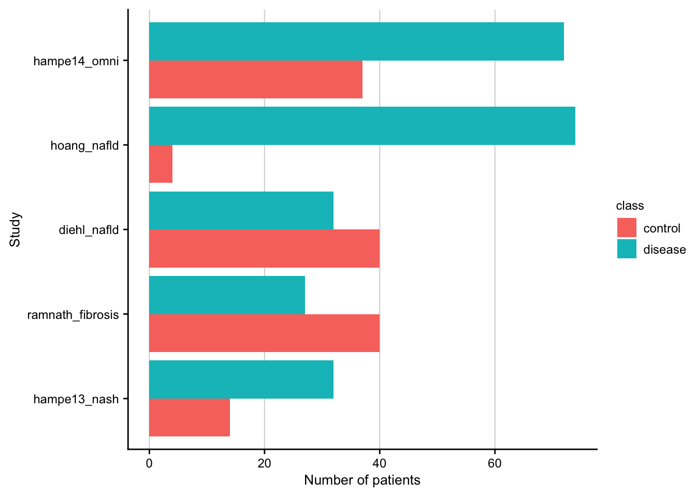
| Version | Author | Date |
|---|---|---|
| f8d8343 | christianholland | 2020-12-21 |
Gene coverage
Barplot showing the gene coverage of the patient cohorts.
contrasts <- readRDS(here(output_path, "limma_result.rds")) %>%
distinct(gene, phenotype, source) %>%
count(phenotype, source)
#> distinct: removed 167,964 rows (65%), 89,724 rows remaining
#> count: now 5 rows and 3 columns, ungrouped
contrasts %>%
ggplot(aes(
x = n, fct_reorder(interaction(source, phenotype, sep = "_"), n),
group = source
)) +
geom_col() +
labs(x = "Gene coverage", y = "Study") +
my_theme(grid = "x", fsize = fz)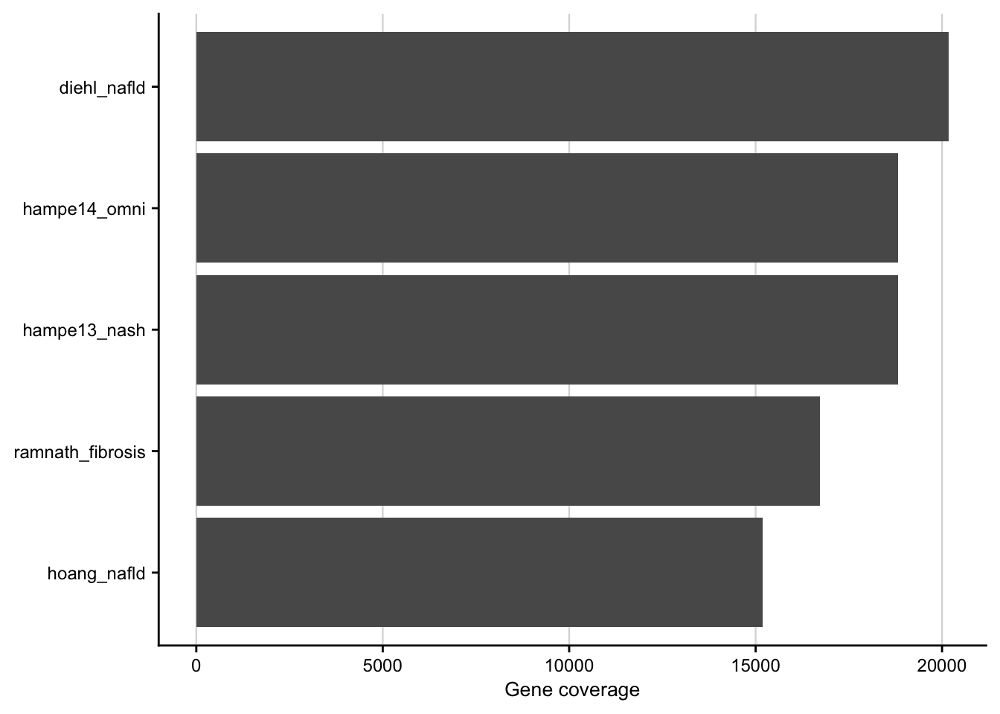
Number of differential expressed genes
Barplot showing the number of differentially expressed genes for each contrast.
contrasts <- readRDS(here(output_path, "limma_result.rds"))
combined_contrasts %>%
filter(regulation != "ns") %>%
count(contrast, source, regulation) %>%
ggplot(aes(y = interaction(source, contrast), x = n, fill = regulation)) +
geom_col(position = position_dodge()) +
labs(y = NULL, y = "Number of degs") +
my_theme(grid = "x", fsize = fz)
#> filter: removed 255,692 rows (99%), 1,996 rows remaining
#> count: now 26 rows and 4 columns, ungrouped
| Version | Author | Date |
|---|---|---|
| f8d8343 | christianholland | 2020-12-21 |
Interstudy analysis of patient cohorts
Mutual similarity of differential expressed genes
This analysis computes the similarity of differential expressed genes for all contrasts of the patient cohorts. Similarity is measured with the Jaccard Index.
contrasts <- readRDS(here(output_path, "limma_result.rds"))
# populate gene sets with a fixed size selected by effect size (t-value)
mat_top <- contrasts %>%
group_by(contrast, phenotype, source) %>%
top_n(500, abs(statistic)) %>%
mutate(key = row_number()) %>%
ungroup() %>%
unite(geneset, source, phenotype, contrast, sep = "-") %>%
mutate(geneset = as_factor(geneset)) %>%
select(geneset, gene, key) %>%
untdy(key, geneset, gene)
#> top_n (grouped): removed 250,188 rows (97%), 7,500 rows remaining
#> ungroup: no grouping variables
#> select: dropped 5 variables (logFC, statistic, pval, fdr, regulation)
#> select: columns reordered (key, geneset, gene)
#> spread: reorganized (geneset, gene) into (diehl-nafld-advanced_vs_mild, ramnath-fibrosis-hcv_adv_vs_early, ramnath-fibrosis-nafld_adv_vs_early, hoang-nafld-stage_1_vs_0, hoang-nafld-stage_2_vs_0, …) [was 7500x3, now 500x16]
# usage of jaccard index for balanced set sizes
j <- set_similarity(mat_top, measure = "jaccard", tidy = T)
#> gather: reorganized (diehl-nafld-advanced_vs_mild, ramnath-fibrosis-hcv_adv_vs_early, ramnath-fibrosis-nafld_adv_vs_early, hoang-nafld-stage_1_vs_0, hoang-nafld-stage_2_vs_0, …) into (set2, similarity) [was 15x16, now 225x3]
#> drop_na: removed 105 rows (47%), 120 rows remaining
#> filter: removed 15 rows (12%), 105 rows remaining
#> mutate_if: converted 'set1' from character to factor (0 new NA)
#> converted 'set2' from character to factor (0 new NA)
saveRDS(j, here(output_path, "gene_set_similarity.rds"))
j %>%
ggplot(aes(x = set1, y = set2, fill = similarity)) +
geom_tile(color = "black") +
scale_fill_gradient(low = "white", high = aachen_color("green")) +
labs(x = NULL, y = NULL, fill = "Jaccard\nIndex") +
theme(axis.text.x = element_text(angle = 45, hjust = 1)) +
my_theme(fsize = fz, grid = "no")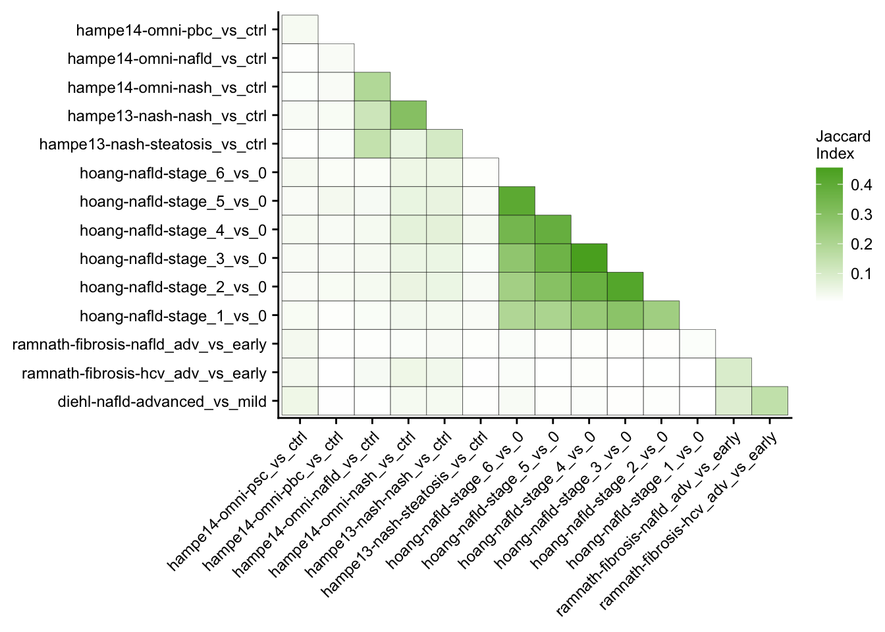
| Version | Author | Date |
|---|---|---|
| d7ef743 | christianholland | 2020-12-20 |
Mutual enrichment of differential expressed genes
This analysis explores whether the top differential expressed genes of specific contrasts of the acute mouse models are consistently regulated across the acute mouse models.
contrasts <- readRDS(here(output_path, "limma_result.rds"))
# populate gene sets with a fixed size selected by effect size (t-value)
genesets_top <- contrasts %>%
mutate(direction = case_when(
sign(statistic) >= 0 ~ "up",
sign(statistic) < 0 ~ "down"
)) %>%
group_by(source, phenotype, contrast, direction) %>%
top_n(500, abs(statistic)) %>%
ungroup() %>%
unite(geneset, source, phenotype, contrast, sep = "-") %>%
unite(geneset, geneset, direction, sep = "|") %>%
mutate(geneset = as_factor(geneset)) %>%
select(geneset, gene)
#> top_n (grouped): removed 242,688 rows (94%), 15,000 rows remaining
#> ungroup: no grouping variables
#> select: dropped 5 variables (logFC, statistic, pval, fdr, regulation)
# construct signature matrix/data frame
signature_df <- contrasts %>%
unite(signature, source, phenotype, contrast, sep = "-") %>%
mutate(signature = as_factor(signature)) %>%
untdy("gene", "signature", "statistic")
#> select: dropped 4 variables (logFC, pval, fdr, regulation)
#> spread: reorganized (signature, statistic) into (diehl-nafld-advanced_vs_mild, ramnath-fibrosis-hcv_adv_vs_early, ramnath-fibrosis-nafld_adv_vs_early, hoang-nafld-stage_1_vs_0, hoang-nafld-stage_2_vs_0, …) [was 257688x3, now 24107x16]
# run gsea
set.seed(123)
gsea_res_top <- run_gsea(signature_df, genesets_top, tidy = T) %>%
separate(geneset, into = c("geneset", "direction"), sep = "[|]") %>%
mutate(
signature = as_factor(signature),
geneset = as_factor(geneset)
)
#> summarise: now 30 rows and 2 columns, ungrouped
#> rename: renamed one variable (geneset)
#> select: dropped one variable (gene)
#> distinct: removed 14,970 rows (>99%), 30 rows remaining
#> left_join: added no columns
#> > rows only in x 0
#> > rows only in y ( 0)
#> > matched rows 450
#> > =====
#> > rows total 450
saveRDS(gsea_res_top, here(output_path, "interstudy_enrichment.rds"))
# individual gsea plot
make_gsea_plot(
signature = signature_df %>%
rownames_to_column("gene") %>%
select(gene, t = `hoang-nafld-stage_6_vs_0`) %>%
drop_na(),
geneset = genesets_top %>%
filter(geneset == "diehl-nafld-advanced_vs_mild|up"),
gene_level_stat = t
)
#> select: renamed one variable (t) and dropped 14 variables
#> drop_na: removed 8,914 rows (37%), 15,193 rows remaining
#> rename: renamed one variable (stat)
#> transmute: changed 15,193 values (100%) of 'stat' (0 new NA)
#> new variable 'rank' (integer) with 15,193 unique values and 0% NA
#> select: dropped one variable (rank)
#> filter: removed 14,500 rows (97%), 500 rows remaining
#> inner_join: added one column (geneset)
#> > rows only in x (14,720)
#> > rows only in y ( 27)
#> > matched rows 473
#> > ========
#> > rows total 473
#> top_n: removed 947 rows (>99%), one row remaining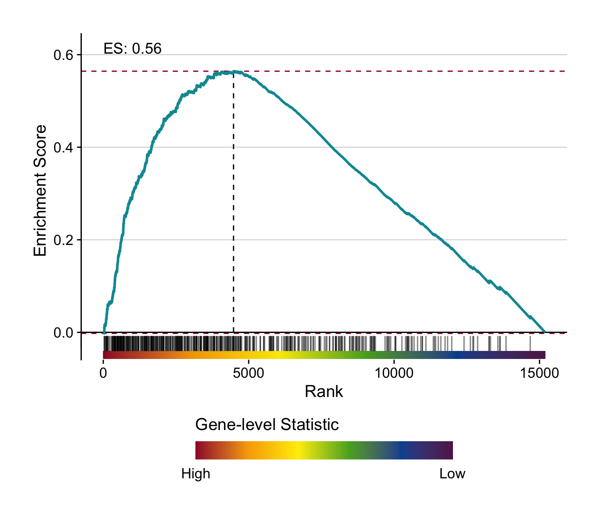
# summary gsea plot
gsea_res_top %>%
mutate(label = stars.pval(padj)) %>%
ggplot(aes(x = signature, y = geneset, fill = ES)) +
geom_tile() +
geom_text(aes(label = label)) +
facet_wrap(~direction) +
theme(axis.text.x = element_text(angle = 45, hjust = 1)) +
scale_fill_gradient2() +
my_theme(fsize = fz, grid = "no") +
labs(x = "Signature", y = "Gene set")
| Version | Author | Date |
|---|---|---|
| 45a33e4 | christianholland | 2021-01-07 |
Comparison of mouse and human data
With this analysis we check whether the top differential expressed human genes have the same direction of regulation in the chronic mouse model.
Enrichment of human gene sets in mouse signatures
contrasts <- readRDS(here(output_path, "limma_result.rds"))
chronic_mouse <- readRDS(
here("output/mouse-chronic-ccl4/limma_result_hs.rds")
) %>%
filter(contrast_reference == "pure_ccl4")
#> filter: removed 120,807 rows (75%), 40,269 rows remaining
# populate gene sets with a fixed size selected by effect size (t-value)
genesets_top <- contrasts %>%
mutate(direction = case_when(
sign(statistic) >= 0 ~ "up",
sign(statistic) < 0 ~ "down"
)) %>%
group_by(source, phenotype, contrast, direction) %>%
top_n(500, abs(statistic)) %>%
ungroup() %>%
unite(geneset, source, phenotype, contrast, sep = "-") %>%
unite(geneset, geneset, direction, sep = "|") %>%
mutate(geneset = as_factor(geneset)) %>%
select(geneset, gene)
#> top_n (grouped): removed 242,688 rows (94%), 15,000 rows remaining
#> ungroup: no grouping variables
#> select: dropped 5 variables (logFC, statistic, pval, fdr, regulation)
signature_df <- chronic_mouse %>%
untdy("gene", "contrast", "statistic")
#> select: dropped 5 variables (logFC, pval, fdr, regulation, contrast_reference)
#> spread: reorganized (contrast, statistic) into (pure_ccl_2m_vs_0m, pure_ccl_6m_vs_0m, pure_ccl_12m_vs_0m) [was 40269x3, now 13423x4]
# run gsea
set.seed(123)
gsea_res_top <- run_gsea(signature_df, genesets_top, tidy = T) %>%
separate(geneset, into = c("geneset", "direction"), sep = "[|]") %>%
separate(geneset,
into = c("source", "phenotype", "contrast"), sep = "-",
remove = F
) %>%
mutate(
signature = as_factor(signature),
geneset = as_factor(geneset),
time = parse_number(as.character(signature))
)
#> summarise: now 30 rows and 2 columns, ungrouped
#> rename: renamed one variable (geneset)
#> select: dropped one variable (gene)
#> distinct: removed 14,970 rows (>99%), 30 rows remaining
#> left_join: added no columns
#> > rows only in x 0
#> > rows only in y ( 0)
#> > matched rows 90
#> > ====
#> > rows total 90
saveRDS(gsea_res_top, here(output_path, "gsea_res.rds"))
# individual gsea plot
make_gsea_plot(
signature = signature_df %>%
rownames_to_column("gene") %>%
select(gene, t = `pure_ccl_12m_vs_0m`) %>%
drop_na(),
geneset = genesets_top %>%
filter(geneset == "diehl-nafld-advanced_vs_mild|up"),
gene_level_stat = t
)
#> select: renamed one variable (t) and dropped 2 variables
#> drop_na: no rows removed
#> rename: renamed one variable (stat)
#> transmute: changed 13,423 values (100%) of 'stat' (0 new NA)
#> new variable 'rank' (integer) with 13,423 unique values and 0% NA
#> select: dropped one variable (rank)
#> filter: removed 14,500 rows (97%), 500 rows remaining
#> inner_join: added one column (geneset)
#> > rows only in x (12,990)
#> > rows only in y ( 67)
#> > matched rows 433
#> > ========
#> > rows total 433
#> top_n: removed 867 rows (>99%), one row remaining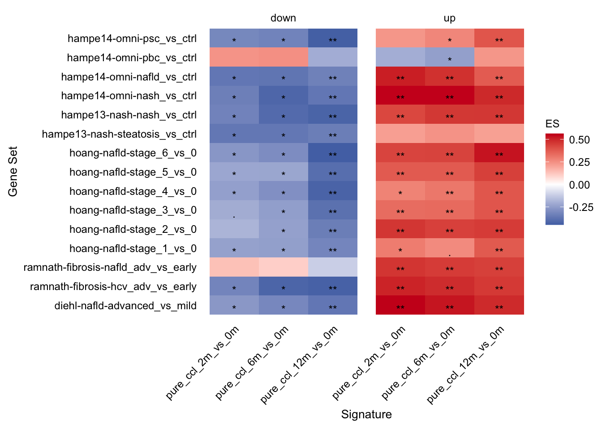
# summary gsea plot
gsea_res_top %>%
mutate(label = stars.pval(padj)) %>%
ggplot(aes(x = signature, y = geneset, fill = ES)) +
geom_tile() +
geom_text(aes(label = label), size = fz / (14 / 5), vjust = 1) +
facet_wrap(~direction, ncol = 2) +
theme(
axis.text.x = element_text(angle = 45, hjust = 1),
axis.line = element_blank(),
axis.ticks = element_blank()
) +
scale_fill_gradient2(
low = aachen_color("blue"), mid = "white",
high = aachen_color("red")
) +
my_theme(grid = "no", fsize = fz) +
labs(x = "Signature", y = "Gene Set", fill = "ES") +
guides(fill = guide_colorbar(title = "ES"))
| Version | Author | Date |
|---|---|---|
| 45a33e4 | christianholland | 2021-01-07 |
Leading edge extraction
The enrichment of human genes sets in mouse signatures reveals that there is a set of genes which is significantly consistently deregulated in mouse and human. To identify these genes we extract the leading edge genes from the enrichment analysis.
gsea_res <- readRDS(here(output_path, "gsea_res.rds"))
# extract leading edges from significant and correctly directed enrichments
leading_edges <- gsea_res %>%
filter(padj <= 0.05 &
(direction == "up" & ES >= 0) | (direction == "down" & ES < 0)) %>%
unnest(leadingEdge) %>%
rename(gene = leadingEdge)
#> filter: removed 12 rows (13%), 78 rows remaining
#> rename: renamed one variable (gene)
saveRDS(leading_edges, here(output_path, "individual_le.rds"))
# for each study a union of leading edges is build across all contrast per time
# point
# subsequently we count how often a gene appears per time and direction
# (max 5 times because we have 5 studies in total)
# filter for those leading edges that appear in at least three studies
unified_le <- leading_edges %>%
distinct(signature, direction, time, source, phenotype, gene) %>%
count(signature, time, gene, direction, sort = T, name = "n_studies") %>%
filter(n_studies >= 3)
#> distinct: removed 3,923 rows (32%), 8,316 rows remaining
#> count: now 6,080 rows and 5 columns, ungrouped
#> filter: removed 5,632 rows (93%), 448 rows remaining
# translate to mgi genes for later use
unified_le_mgi <- unified_le %>%
translate_gene_ids(from = "symbol_hgnc", to = "symbol_mgi") %>%
distinct(direction, gene, signature) %>%
# remove predicted genes
filter(!str_detect(gene, "Gm[0-9]+"))
#> select: dropped 6 variables (ensembl_mgi, ensembl_v_mgi, entrez_mgi, ensembl_hgnc, ensembl_v_hgnc, …)
#> drop_na: removed 1,905 rows (6%), 30,461 rows remaining
#> rename: renamed one variable (symbol_hgnc)
#> left_join: added one column (symbol_mgi)
#> > rows only in x 0
#> > rows only in y (30,218)
#> > matched rows 473 (includes duplicates)
#> > ========
#> > rows total 473
#> select: renamed one variable (gene) and dropped one variable
#> distinct: removed 6 rows (1%), 467 rows remaining
#> filter: removed 4 rows (1%), 463 rows remaining
# overlap of unified and consistent leading edge genes per time point
v <- unified_le %>%
rename(regulation = direction) %>%
mutate(class = str_c("Month ", time)) %>%
group_split(class) %>%
plot_venn_diagram()
#> rename: renamed one variable (regulation)
#> distinct: removed 157 rows (99%), one row remaining
#> distinct: removed 124 rows (99%), one row remaining
#> distinct: removed 164 rows (99%), one row remaining
#> count: now 2 rows and 2 columns, ungrouped
#> count: now 2 rows and 2 columns, ungrouped
#> count: now 2 rows and 2 columns, ungrouped
#> filter: removed one row (50%), one row remaining
#> filter: removed one row (50%), one row remaining
#> filter: removed one row (50%), one row remaining
#> filter: removed 73 rows (46%), 85 rows remaining
#> filter: removed 48 rows (38%), 77 rows remaining
#> filter: removed 48 rows (38%), 77 rows remaining
#> filter: removed 68 rows (41%), 97 rows remaining
#> filter: removed 73 rows (46%), 85 rows remaining
#> filter: removed 68 rows (41%), 97 rows remaining
#> filter: removed 73 rows (46%), 85 rows remaining
#> filter: removed 48 rows (38%), 77 rows remaining
#> filter: removed 68 rows (41%), 97 rows remaining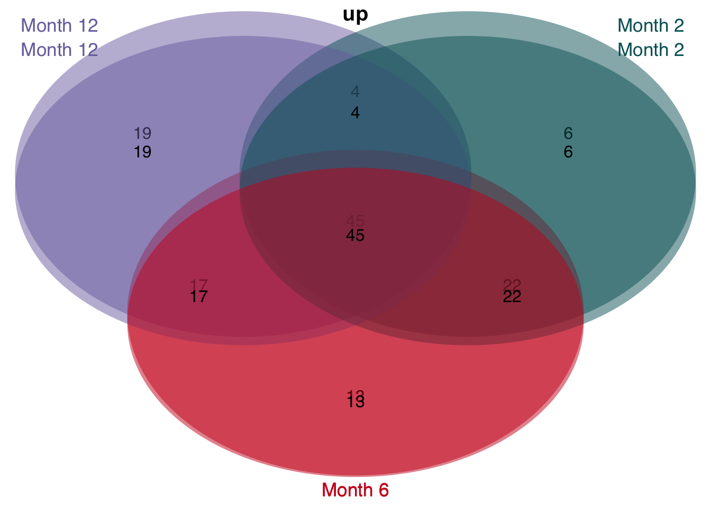
| Version | Author | Date |
|---|---|---|
| d7ef743 | christianholland | 2020-12-20 |
#> filter: removed one row (50%), one row remaining
#> filter: removed one row (50%), one row remaining
#> filter: removed one row (50%), one row remaining
#> filter: removed 85 rows (54%), 73 rows remaining
#> filter: removed 77 rows (62%), 48 rows remaining
#> filter: removed 77 rows (62%), 48 rows remaining
#> filter: removed 97 rows (59%), 68 rows remaining
#> filter: removed 85 rows (54%), 73 rows remaining
#> filter: removed 97 rows (59%), 68 rows remaining
#> filter: removed 85 rows (54%), 73 rows remaining
#> filter: removed 77 rows (62%), 48 rows remaining
#> filter: removed 97 rows (59%), 68 rows remaining
| Version | Author | Date |
|---|---|---|
| d7ef743 | christianholland | 2020-12-20 |
saveRDS(unified_le, here(output_path, "leading_edges.rds"))
saveRDS(unified_le_mgi, here(output_path, "leading_edges_mgi.rds"))Heatmap of leading edge genes
# load leading edge genes and human and mouse contrasts
le <- readRDS(here(output_path, "leading_edges.rds"))
contrasts <- readRDS(here(output_path, "limma_result.rds"))
chronic_mouse <- readRDS(
here("output/mouse-chronic-ccl4/limma_result_hs.rds")
) %>%
filter(contrast_reference == "pure_ccl4")
#> filter: removed 120,807 rows (75%), 40,269 rows remaining
# filter mouse and human genes for leading edge genes
c <- chronic_mouse %>%
inner_join(le, by = "gene") %>%
mutate(class = "chronic") %>%
select(gene, contrast, logFC, class)
#> inner_join: added 4 columns (signature, time, direction, n_studies)
#> > rows only in x (39,585)
#> > rows only in y ( 0)
#> > matched rows 1,344 (includes duplicates)
#> > ========
#> > rows total 1,344
#> select: dropped 9 variables (statistic, pval, fdr, regulation, contrast_reference, …)
h <- contrasts %>%
inner_join(le, by = "gene") %>%
mutate(class = "human") %>%
unite(contrast, source, phenotype, contrast, sep = "-") %>%
select(gene, contrast, logFC, class)
#> inner_join: added 4 columns (signature, time, direction, n_studies)
#> > rows only in x (254,285)
#> > rows only in y ( 0)
#> > matched rows 6,681 (includes duplicates)
#> > =========
#> > rows total 6,681
#> select: dropped 8 variables (statistic, pval, fdr, regulation, signature, …)
df <- bind_rows(c, h) %>%
mutate(contrast = as_factor(contrast)) %>%
distinct()
#> distinct: removed 3,938 rows (49%), 4,087 rows remaining
# assign a rank for each gene based on absolute mean logfc
df_ranked <- df %>%
group_by(gene) %>%
summarise(mean_logfc = mean(logFC)) %>%
transmute(gene, rank = row_number(-abs(mean_logfc))) %>%
inner_join(df, by = "gene")
#> summarise: now 228 rows and 2 columns, ungrouped
#> transmute: dropped one variable (mean_logfc)
#> new variable 'rank' (integer) with 228 unique values and 0% NA
#> inner_join: added 3 columns (contrast, logFC, class)
#> > rows only in x ( 0)
#> > rows only in y ( 0)
#> > matched rows 4,087 (includes duplicates)
#> > =======
#> > rows total 4,087
# get degs from single cell data
# see "code/meta-mouse-vs-human/sc_deg.R" to see how this object was created.
sc_degs <- readRDS(here(data_path, "single_cell_degs.rds")) %>%
enframe("celltype") %>%
unnest(value) %>%
filter(p_val_adj <= 0.05) %>%
mutate(adjusted_logfc = case_when(
avg_logFC >= 0 & cluster == "Uninjured" ~ -avg_logFC,
avg_logFC < 0 & cluster == "Uninjured" ~ -avg_logFC,
TRUE ~ avg_logFC
)) %>%
filter(abs(avg_logFC) >= 0.25)
#> filter: removed 19,662 rows (38%), 31,422 rows remaining
#> filter: removed 26,682 rows (85%), 4,740 rows remaining
# combine consistent genes with cell types
df_ranked_ct <- df_ranked %>%
left_join(sc_degs, by = "gene") %>%
mutate(celltype = fct_explicit_na(celltype, na_level = "Unknown"))
#> left_join: added 8 columns (celltype, p_val, avg_logFC, pct.1, pct.2, …)
#> > rows only in x 3,187
#> > rows only in y (4,616)
#> > matched rows 2,232 (includes duplicates)
#> > =======
#> > rows total 5,419
saveRDS(df_ranked_ct, here(output_path, "consistent_genes.rds"))
mat <- df_ranked_ct %>%
filter(rank <= 100) %>%
distinct(gene, contrast, logFC) %>%
untdy(feature = "gene", key = "contrast", value = "logFC") %>%
as.matrix()
#> filter: removed 2,675 rows (49%), 2,744 rows remaining
#> distinct: removed 954 rows (35%), 1,790 rows remaining
#> select: no changes
#> spread: reorganized (contrast, logFC) into (pure_ccl_2m_vs_0m, pure_ccl_6m_vs_0m, pure_ccl_12m_vs_0m, diehl-nafld-advanced_vs_mild, ramnath-fibrosis-hcv_adv_vs_early, …) [was 1790x3, now 100x19]
ComplexHeatmap::Heatmap(t(as.matrix(mat)),
col = col_fun,
cluster_rows = F,
cluster_columns = T,
row_names_gp = gpar(fontsize = fz), column_names_gp = gpar(fontsize = fz - 4),
name = "logFC",
row_gap = unit(2.5, "mm"),
border = T,
row_split = c(rep("Mouse", 3), rep("Human", 15))
)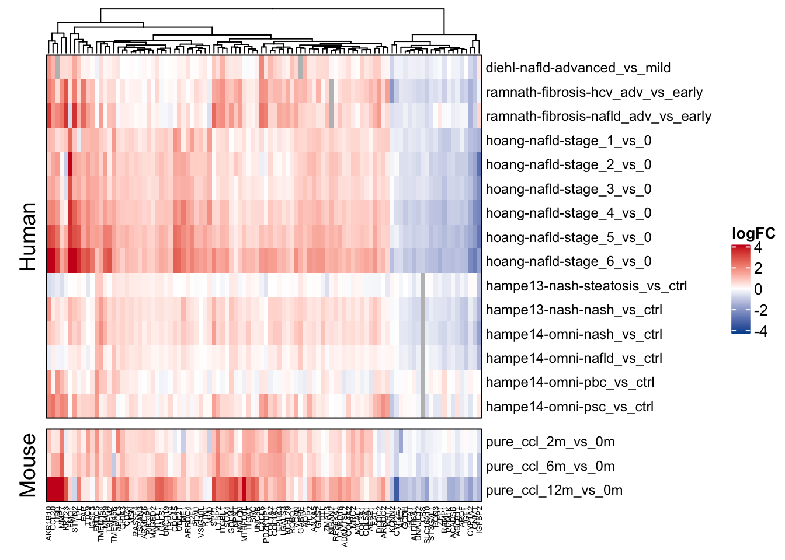
| Version | Author | Date |
|---|---|---|
| d7ef743 | christianholland | 2020-12-20 |
Characterization of leading edge genes
Up and down-regulated leading edge genes are characterized with GO terms, PROGENy’s pathways and DoRothEA’s TFs. As statistic over-representation analysis is used.
signatures <- readRDS(here(output_path, "leading_edges.rds")) %>%
distinct(gene, regulation = direction)
#> distinct: removed 220 rows (49%), 228 rows remaining
genesets <- load_genesets(organism = "human") %>%
filter(confidence %in% c(NA, "A", "B", "C"))
#> filter: removed 2,643,412 rows (80%), 662,851 rows remaining
#> select: renamed one variable (gene) and dropped 2 variables
#> gather: reorganized (Androgen, EGFR, Estrogen, Hypoxia, JAK-STAT, …) into (geneset, weight) [was 1301x15, now 18214x3]
#> filter: removed 16,814 rows (92%), 1,400 rows remaining
#> select: dropped one variable (weight)
#> select: renamed 2 variables (geneset, gene) and dropped one variable
#> filter: removed 472,718 rows (41%), 678,284 rows remaining
ora_res <- signatures %>%
nest(sig = -c(regulation)) %>%
dplyr::mutate(ora = sig %>% map(run_ora,
sets = genesets, min_size = 10,
options = list(alternative = "greater"),
background_n = 20000
)) %>%
select(-sig) %>%
unnest(ora)
#> add_count: new variable 'n' (integer) with 671 unique values and 0% NA
#> filter: removed 13,277 rows (2%), 665,007 rows remaining
#> select: dropped one variable (n)
#> ungroup: no grouping variables
#> select: dropped 4 variables (set, conf.low, conf.high, method)
#> add_count: new variable 'n' (integer) with 671 unique values and 0% NA
#> filter: removed 13,277 rows (2%), 665,007 rows remaining
#> select: dropped one variable (n)
#> ungroup: no grouping variables
#> select: dropped 4 variables (set, conf.low, conf.high, method)
#> select: dropped one variable (sig)
saveRDS(ora_res, here(output_path, "leading_edges_characterization.rds"))GO downstream analysis
In this section significant GO terms are summarized in two different ways. i) Which words appear the most among the GO terms and ii) Position of members of manually created GO cluster in a ranked list of significant GO terms (based on p-value)
Text analysis
GO terms are splitted into words and their frequency is counted.
# list of words that will be ignored
stop_go_words <- readRDS(here("data/annotation/stop_go_words.rds"))
go_terms <- readRDS(here(output_path, "leading_edges_characterization.rds")) %>%
filter(group == "go" & fdr <= 0.05) %>%
mutate(
term = str_remove(geneset, "GO_"),
term = str_replace_all(term, "_", " "),
term = str_to_lower(term)
) %>%
select(regulation, term)
#> filter: removed 4,026 rows (90%), 441 rows remaining
#> select: dropped 8 variables (geneset, group, confidence, contingency_table, estimate, …)
go_wordcounts <- go_terms %>%
# glue words that should be treated as one
mutate(
term = str_replace(term, "smooth muscle", "smoothmuscle"),
term = str_replace(term, "amino acid", "aminoacid"),
term = str_replace(term, "cell cycle", "cellcycle"),
term = str_replace(term, "endoplasmic reticulum stress", "endoplasmicreticulumstress"),
term = str_replace(term, "endoplasmic reticulum", "endoplasmicreticulum")
) %>%
unnest_tokens(word, term) %>%
anti_join(stop_words, by = "word") %>%
# correct for abbreviations
mutate(word = case_when(
word == "er" ~ "endoplasmicreticulum",
TRUE ~ word
)) %>%
# remove words which are pure numbers
filter(!str_detect(word, "^[0-9]+")) %>%
# count word frequency
count(regulation, word, sort = T) %>%
# dissect prior glued words
mutate(word = case_when(
word == "smoothmuscle" ~ "smooth-muscle",
word == "aminoacid" ~ "amino-acid",
word == "cellcycle" ~ "cell-cycle",
word == "endoplasmicreticulumstress" ~ "endoplasmic-reticulum-stress",
word == "endoplasmicreticulum" ~ "endoplasmic-reticulum",
TRUE ~ word
)) %>%
# remove meaning less words
anti_join(stop_go_words, by = "word")
#> anti_join: added no columns
#> > rows only in x 1,527
#> > rows only in y (1,101)
#> > matched rows ( 283)
#> > =======
#> > rows total 1,527
#> filter: removed 2 rows (<1%), 1,525 rows remaining
#> count: now 353 rows and 3 columns, ungrouped
#> anti_join: added no columns
#> > rows only in x 309
#> > rows only in y ( 8)
#> > matched rows ( 44)
#> > =====
#> > rows total 309
saveRDS(go_wordcounts, here(output_path, "go_wordcounts.rds"))
go_wordcounts %>%
filter((regulation == "up" & n > 4) | (regulation == "down" & n > 2)) %>%
ggplot(aes(label = word, size = n)) +
geom_text_wordcloud() +
scale_size_area(max_size = fz / (14 / 5)) +
facet_wrap(~regulation) +
theme(axis.line = element_blank()) +
my_theme(grid = "no", fsize = fz)
#> filter: removed 268 rows (87%), 41 rows remaining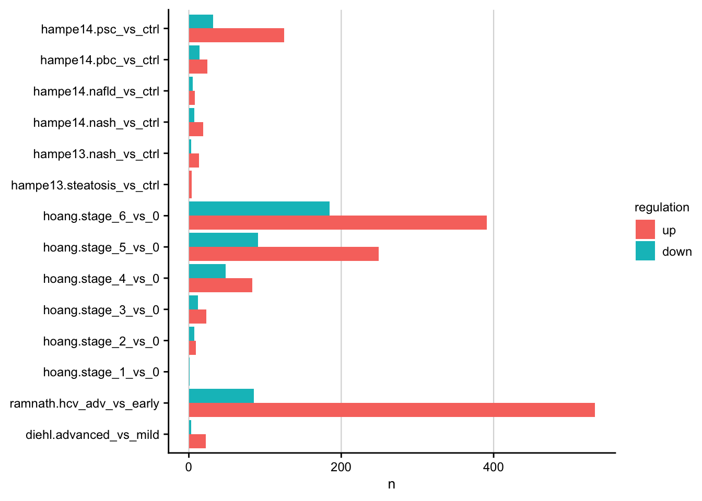
Cluster ranking
Distribution of manually created GO-cluster.
go_cluster_mapping <- tribble(
~cluster, ~description,
1, "Migration",
2, "Development and Morphogenesis",
3, "Metabolism"
)
go_cluster <- read_excel(here(data_path, "manual_go_cluster_anno.xlsx")) %>%
distinct(regulation, term, cluster) %>%
drop_na() %>%
inner_join(go_cluster_mapping)
#> distinct: no rows removed
#> drop_na: removed 210 rows (52%), 192 rows remaining
#> inner_join: added one column (description)
#> > rows only in x ( 0)
#> > rows only in y ( 0)
#> > matched rows 192
#> > =====
#> > rows total 192
go_terms_ranking <- readRDS(
here(output_path, "leading_edges_characterization.rds")
) %>%
mutate(
term = str_remove(geneset, "GO_"),
term = str_replace_all(term, "_", " "),
term = str_to_lower(term)
) %>%
filter(fdr <= 0.05) %>%
group_by(regulation) %>%
mutate(rank = row_number(p.value)) %>%
mutate(max_rank = max(rank)) %>%
ungroup() %>%
select(regulation, term, rank, max_rank)
#> filter: removed 3,997 rows (89%), 470 rows remaining
#> ungroup: no grouping variables
#> select: dropped 8 variables (geneset, group, confidence, contingency_table, estimate, …)
go_cluster_ranking <- go_terms_ranking %>%
inner_join(go_cluster)
#> inner_join: added 2 columns (cluster, description)
#> > rows only in x (292)
#> > rows only in y ( 14)
#> > matched rows 178
#> > =====
#> > rows total 178
saveRDS(go_cluster_ranking, here(output_path, "go_cluster_ranking.rds"))
go_cluster_ranking %>%
mutate(regulation = as_factor(regulation)) %>%
plot_go_rank_density() +
my_theme(grid = "no", fsize = fz)
| Version | Author | Date |
|---|---|---|
| f8d8343 | christianholland | 2020-12-21 |
Integration with chronicity categories
PR of chronicity and etiologies
# load etiology gene sets
etiology_genesets = readRDS(here(output_path, "etiology_gene_sets.rds")) %>%
mutate(join_var = "xy") %>%
nest(etiology_genes = -c(etiology, regulation, join_var))
# load exclusive chronic and acute and common genes
chronic = readRDS(here("output/meta-chronic-vs-acute/ranked_exclusive_chronic_genes.rds")) %>%
mutate(class = "chronic") %>%
select(gene, rank, class, statistic = chronic_statistic)
#> select: renamed one variable (statistic) and dropped 4 variables
acute = readRDS(here("output/meta-chronic-vs-acute/ranked_exclusive_acute_genes.rds")) %>%
mutate(class = "acute") %>%
select(gene, rank, class, statistic = acute_statistic)
#> select: renamed one variable (statistic) and dropped 4 variables
common = readRDS(here("output/meta-chronic-vs-acute/ranked_common_genes.rds")) %>%
mutate(class = "common") %>%
select(gene, rank, class, statistic = chronic_statistic)
#> select: renamed one variable (statistic) and dropped 4 variables
chronicity = bind_rows(chronic, acute, common) %>%
mutate(regulation = if_else(sign(statistic) >= 0, "up", "down"))
chronicity_hgnc = chronicity %>%
translate_gene_ids(from = "symbol_mgi", to = "symbol_hgnc", na_rm = TRUE) %>%
distinct() %>%
# drop genes that appear due to translation now in multiple classes
group_by(gene) %>%
filter(n() == 1) %>%
ungroup()
#> select: dropped 6 variables (ensembl_mgi, ensembl_v_mgi, entrez_mgi, ensembl_hgnc, ensembl_v_hgnc, …)
#> drop_na: removed 1,905 rows (6%), 30,461 rows remaining
#> rename: renamed one variable (symbol_mgi)
#> left_join: added one column (symbol_hgnc)
#> > rows only in x 168
#> > rows only in y (26,671)
#> > matched rows 3,790 (includes duplicates)
#> > ========
#> > rows total 3,958
#> select: renamed one variable (gene) and dropped one variable
#> drop_na: removed 168 rows (4%), 3,790 rows remaining
#> distinct: removed 37 rows (1%), 3,753 rows remaining
#> filter (grouped): removed 173 rows (5%), 3,580 rows remaining
#> ungroup: no grouping variables
# number of genes per regulated chronicity category
chronicity_hgnc %>%
count(class, regulation) %>%
ggplot(aes(x=class, y=n, fill = regulation)) +
geom_col(position = "dodge") +
geom_hline(yintercept = 120)
#> count: now 6 rows and 3 columns, ungrouped
| Version | Author | Date |
|---|---|---|
| c6bfb3b | christianholland | 2021-02-27 |
setup = chronicity_hgnc %>%
group_by(class, regulation) %>%
slice_max(order_by = rank, n = 120, with_ties = FALSE) %>%
mutate(join_var = "xy") %>%
nest(mm_genes = -c(class, regulation, join_var)) %>%
ungroup() %>%
inner_join(etiology_genesets, by=c("regulation", "join_var")) %>%
select(-join_var)
#> slice_max (grouped): removed 2,860 rows (80%), 720 rows remaining
#> ungroup: no grouping variables
#> inner_join: added 2 columns (etiology, etiology_genes)
#> > rows only in x ( 0)
#> > rows only in y ( 0)
#> > matched rows 30 (includes duplicates)
#> > ====
#> > rows total 30
#> select: dropped one variable (join_var)
pr = setup %>%
mutate(pr = map2(etiology_genes, mm_genes, function(hs_genes, mm_genes) {
z <- inner_join(
select(mm_genes, gene),
select(hs_genes, gene), by = "gene")
tibble(
recall = nrow(z) / nrow(hs_genes),
recall_ratio = glue("{nrow(z)}/{nrow(hs_genes)}"),
precision = nrow(z) / nrow(mm_genes),
precision_ratio = glue("{nrow(z)}/{nrow(mm_genes)}")
)}
)) %>%
unnest(pr)
#> select: dropped 2 variables (rank, statistic)
#> select: no changes
#> inner_join: added no columns
#> > rows only in x (112)
#> > rows only in y (684)
#> > matched rows 8
#> > =====
#> > rows total 8
#> select: dropped 2 variables (rank, statistic)
#> select: no changes
#> inner_join: added no columns
#> > rows only in x (119)
#> > rows only in y (202)
#> > matched rows 1
#> > =====
#> > rows total 1
#> select: dropped 2 variables (rank, statistic)
#> select: no changes
#> inner_join: added no columns
#> > rows only in x (119)
#> > rows only in y (113)
#> > matched rows 1
#> > =====
#> > rows total 1
#> select: dropped 2 variables (rank, statistic)
#> select: no changes
#> inner_join: added no columns
#> > rows only in x (119)
#> > rows only in y ( 50)
#> > matched rows 1
#> > =====
#> > rows total 1
#> select: dropped 2 variables (rank, statistic)
#> select: no changes
#> inner_join: added no columns
#> > rows only in x (113)
#> > rows only in y (344)
#> > matched rows 7
#> > =====
#> > rows total 7
#> select: dropped 2 variables (rank, statistic)
#> select: no changes
#> inner_join: added no columns
#> > rows only in x ( 113)
#> > rows only in y (1,330)
#> > matched rows 7
#> > =======
#> > rows total 7
#> select: dropped 2 variables (rank, statistic)
#> select: no changes
#> inner_join: added no columns
#> > rows only in x ( 107)
#> > rows only in y (1,121)
#> > matched rows 13
#> > =======
#> > rows total 13
#> select: dropped 2 variables (rank, statistic)
#> select: no changes
#> inner_join: added no columns
#> > rows only in x (114)
#> > rows only in y (478)
#> > matched rows 6
#> > =====
#> > rows total 6
#> select: dropped 2 variables (rank, statistic)
#> select: no changes
#> inner_join: added no columns
#> > rows only in x (117)
#> > rows only in y (145)
#> > matched rows 3
#> > =====
#> > rows total 3
#> select: dropped 2 variables (rank, statistic)
#> select: no changes
#> inner_join: added no columns
#> > rows only in x (120)
#> > rows only in y (109)
#> > matched rows 0
#> > =====
#> > rows total 0
#> select: dropped 2 variables (rank, statistic)
#> select: no changes
#> inner_join: added no columns
#> > rows only in x (112)
#> > rows only in y (684)
#> > matched rows 8
#> > =====
#> > rows total 8
#> select: dropped 2 variables (rank, statistic)
#> select: no changes
#> inner_join: added no columns
#> > rows only in x (119)
#> > rows only in y (202)
#> > matched rows 1
#> > =====
#> > rows total 1
#> select: dropped 2 variables (rank, statistic)
#> select: no changes
#> inner_join: added no columns
#> > rows only in x (119)
#> > rows only in y (113)
#> > matched rows 1
#> > =====
#> > rows total 1
#> select: dropped 2 variables (rank, statistic)
#> select: no changes
#> inner_join: added no columns
#> > rows only in x (119)
#> > rows only in y ( 50)
#> > matched rows 1
#> > =====
#> > rows total 1
#> select: dropped 2 variables (rank, statistic)
#> select: no changes
#> inner_join: added no columns
#> > rows only in x (113)
#> > rows only in y (344)
#> > matched rows 7
#> > =====
#> > rows total 7
#> select: dropped 2 variables (rank, statistic)
#> select: no changes
#> inner_join: added no columns
#> > rows only in x ( 102)
#> > rows only in y (1,319)
#> > matched rows 18
#> > =======
#> > rows total 18
#> select: dropped 2 variables (rank, statistic)
#> select: no changes
#> inner_join: added no columns
#> > rows only in x ( 96)
#> > rows only in y (1,110)
#> > matched rows 24
#> > =======
#> > rows total 24
#> select: dropped 2 variables (rank, statistic)
#> select: no changes
#> inner_join: added no columns
#> > rows only in x (111)
#> > rows only in y (475)
#> > matched rows 9
#> > =====
#> > rows total 9
#> select: dropped 2 variables (rank, statistic)
#> select: no changes
#> inner_join: added no columns
#> > rows only in x (119)
#> > rows only in y (147)
#> > matched rows 1
#> > =====
#> > rows total 1
#> select: dropped 2 variables (rank, statistic)
#> select: no changes
#> inner_join: added no columns
#> > rows only in x (119)
#> > rows only in y (108)
#> > matched rows 1
#> > =====
#> > rows total 1
#> select: dropped 2 variables (rank, statistic)
#> select: no changes
#> inner_join: added no columns
#> > rows only in x ( 96)
#> > rows only in y (668)
#> > matched rows 24
#> > =====
#> > rows total 24
#> select: dropped 2 variables (rank, statistic)
#> select: no changes
#> inner_join: added no columns
#> > rows only in x (114)
#> > rows only in y (197)
#> > matched rows 6
#> > =====
#> > rows total 6
#> select: dropped 2 variables (rank, statistic)
#> select: no changes
#> inner_join: added no columns
#> > rows only in x (120)
#> > rows only in y (114)
#> > matched rows 0
#> > =====
#> > rows total 0
#> select: dropped 2 variables (rank, statistic)
#> select: no changes
#> inner_join: added no columns
#> > rows only in x (117)
#> > rows only in y ( 48)
#> > matched rows 3
#> > =====
#> > rows total 3
#> select: dropped 2 variables (rank, statistic)
#> select: no changes
#> inner_join: added no columns
#> > rows only in x (105)
#> > rows only in y (336)
#> > matched rows 15
#> > =====
#> > rows total 15
#> select: dropped 2 variables (rank, statistic)
#> select: no changes
#> inner_join: added no columns
#> > rows only in x ( 109)
#> > rows only in y (1,326)
#> > matched rows 11
#> > =======
#> > rows total 11
#> select: dropped 2 variables (rank, statistic)
#> select: no changes
#> inner_join: added no columns
#> > rows only in x ( 84)
#> > rows only in y (1,098)
#> > matched rows 36
#> > =======
#> > rows total 36
#> select: dropped 2 variables (rank, statistic)
#> select: no changes
#> inner_join: added no columns
#> > rows only in x (110)
#> > rows only in y (474)
#> > matched rows 10
#> > =====
#> > rows total 10
#> select: dropped 2 variables (rank, statistic)
#> select: no changes
#> inner_join: added no columns
#> > rows only in x (116)
#> > rows only in y (144)
#> > matched rows 4
#> > =====
#> > rows total 4
#> select: dropped 2 variables (rank, statistic)
#> select: no changes
#> inner_join: added no columns
#> > rows only in x (115)
#> > rows only in y (104)
#> > matched rows 5
#> > =====
#> > rows total 5
saveRDS(pr, here(output_path, "precision_recall_chronicity.rds"))
set.seed(123)
pr %>%
mutate(regulation = factor(regulation, levels = c("up", "down"))) %>%
ggplot(aes(x = recall, y = precision, label = class,
color = class)) +
geom_jitter(width = 0.0015, height = 0) +
facet_rep_grid(etiology ~ regulation) +
geom_abline(lty = "dashed") +
expand_limits(x = 0, y = 0) +
labs(x = "Recall", y = "Precision") +
my_theme(fsize = fz) +
scale_color_viridis_d()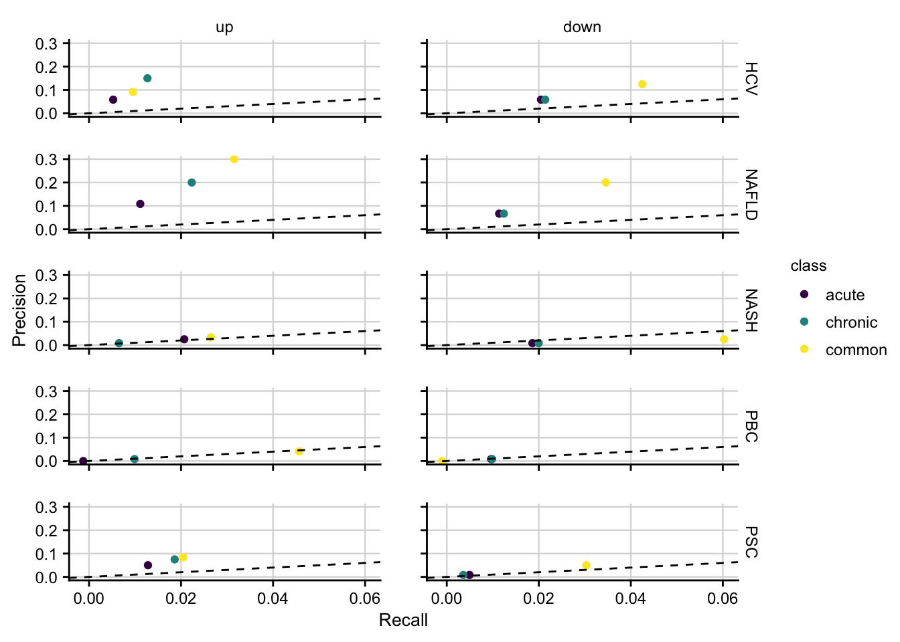
| Version | Author | Date |
|---|---|---|
| c6bfb3b | christianholland | 2021-02-27 |
Integration of published chronic mouse models
In this section the newly generated and previously published chronic mouse models are analyzed in terms of how well they reflect different human etiologies. The differential expressed genes of the already published mouse models is accessed from Teufel et al., 2016, Table S2.
Load Teufel genes
Here the differentially expressed genes of the mouse models from the Teufel study are loaded.
teufel_genes <- read_excel(here(data_path, "TableS2_Teufel_clean.xlsx"),
sheet = "mouse"
) %>%
rename(gene = ...1) %>%
pivot_longer(-gene) %>%
separate(name, into = c("study", "key")) %>%
pivot_wider(names_from = key, values_from = value) %>%
assign_deg(fdr_cutoff = 0.05, effect_size_cutoff = log2(1.5), effect_size_id = logfc) %>%
mutate(study = str_to_upper(study)) %>%
mutate(study = factor(study, levels = c(
"HF12", "HF18", "STZ12", "STZ18", "MCD4",
"MCD8", "PTEN", "HF30", "WTD"
)))
#> rename: renamed one variable (gene)
#> pivot_longer: reorganized (hf12_logfc, hf12_fdr, hf18_logfc, hf18_fdr, stz12_logfc, …) into (name, value) [was 1513x19, now 27234x3]
#> pivot_wider: reorganized (key, value) into (logfc, fdr) [was 27234x4, now 13617x4]
# for late use mgi symbols are translated to hgnc
teufel_genes_hs <- teufel_genes %>%
translate_gene_ids(from = "symbol_mgi", to = "symbol_hgnc") %>%
drop_na(gene) %>%
distinct() %>%
# in case of duplicated genes take the one with the higher logfc
group_by(study, gene) %>%
slice_max(n = 1, order_by = abs(logfc)) %>%
ungroup()
#> select: dropped 6 variables (ensembl_mgi, ensembl_v_mgi, entrez_mgi, ensembl_hgnc, ensembl_v_hgnc, …)
#> drop_na: removed 1,905 rows (6%), 30,461 rows remaining
#> rename: renamed one variable (symbol_mgi)
#> left_join: added one column (symbol_hgnc)
#> > rows only in x 1,539
#> > rows only in y (29,020)
#> > matched rows 12,969 (includes duplicates)
#> > ========
#> > rows total 14,508
#> select: renamed one variable (gene) and dropped one variable
#> drop_na: removed 1,539 rows (11%), 12,969 rows remaining
#> distinct: removed 171 rows (1%), 12,798 rows remaining
#> slice_max (grouped): removed 222 rows (2%), 12,576 rows remaining
#> ungroup: no grouping variables
saveRDS(teufel_genes, here(output_path, "teufel_genes.rds"))
saveRDS(teufel_genes_hs, here(output_path, "teufel_genes_hs.rds"))Chronic mouse models in numbers
Number of differentially expressed genes per chronic mouse model.
teufel_genes <- readRDS(here(output_path, "teufel_genes.rds")) %>%
assign_deg(effect_size_cutoff = log2(1.5), effect_size_id = logfc) %>%
filter(regulation != "ns")
#> filter: removed 11,046 rows (81%), 2,571 rows remaining
chronic <- readRDS(here("output/mouse-chronic-ccl4/limma_result.rds")) %>%
filter(contrast_reference == "pure_ccl4") %>%
assign_deg(effect_size_cutoff = log2(1.5)) %>%
filter(regulation != "ns")
#> filter: removed 138,042 rows (75%), 46,014 rows remaining
#> filter: removed 40,017 rows (87%), 5,997 rows remaining
teufel_count <- teufel_genes %>%
count(study, regulation)
#> count: now 18 rows and 3 columns, ungrouped
chronic_count <- chronic %>%
count(contrast, regulation) %>%
rename(study = contrast)
#> count: now 6 rows and 3 columns, ungrouped
#> rename: renamed one variable (study)
df <- bind_rows(teufel_count, chronic_count)
saveRDS(df, here(output_path, "chronic_mouse_deg_numbers.rds"))
df %>%
ggplot(aes(y = study, x = n, fill = regulation)) +
geom_col(position = "dodge") +
labs(x = "Number of differential expressed genes", y = NULL) +
scale_x_log10(
breaks = scales::trans_breaks("log10", function(x) 10^x),
labels = scales::trans_format("log10", scales::math_format(10^.x))
) +
my_theme(grid = "x", fsize = fz) +
annotation_logticks(sides = "b")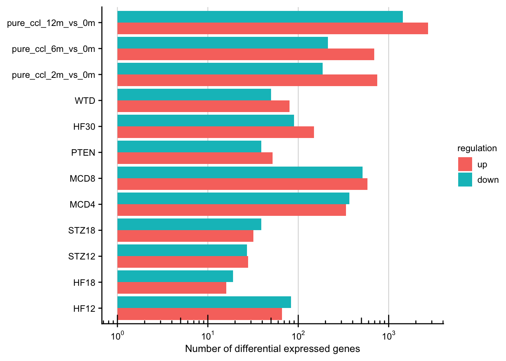
| Version | Author | Date |
|---|---|---|
| bf6fcc6 | christianholland | 2020-12-22 |
Similarity of chronic mouse models and patient cohorts
patient <- readRDS(here(output_path, "limma_result.rds")) %>%
select(gene, contrast, logFC, fdr, regulation, source, phenotype, contrast)
#> select: dropped 2 variables (statistic, pval)
teufel <- readRDS(here(output_path, "teufel_genes_hs.rds")) %>%
rename(contrast = study, logFC = logfc)
#> rename: renamed 2 variables (contrast, logFC)
chronic <- readRDS(here("output/mouse-chronic-ccl4/limma_result_hs.rds")) %>%
filter(contrast_reference == "pure_ccl4") %>%
select(-c(statistic, pval, contrast_reference))
#> filter: removed 120,807 rows (75%), 40,269 rows remaining
#> select: dropped 3 variables (statistic, pval, contrast_reference)
contrasts <- bind_rows(patient, teufel, chronic) %>%
assign_deg(effect_size_cutoff = log2(1.5))
# populate gene sets with only significantly expressed genes
mat_sig <- contrasts %>%
filter(regulation != "ns") %>%
unite(geneset, source, phenotype, contrast, sep = "-", na.rm = T) %>%
add_count(geneset, name = "size") %>%
# exclude gene sets with a size < 20
filter(size >= 20) %>%
group_by(geneset) %>%
mutate(key = row_number()) %>%
ungroup() %>%
mutate(geneset = as_factor(geneset)) %>%
select(geneset, gene, key) %>%
untdy(key, geneset, gene)
#> filter: removed 296,977 rows (96%), 13,556 rows remaining
#> add_count: new variable 'size' (integer) with 26 unique values and 0% NA
#> filter: removed one row (<1%), 13,555 rows remaining
#> ungroup: no grouping variables
#> select: dropped 4 variables (logFC, fdr, regulation, size)
#> select: columns reordered (key, geneset, gene)
#> spread: reorganized (geneset, gene) into (diehl-nafld-advanced_vs_mild, ramnath-fibrosis-hcv_adv_vs_early, hoang-nafld-stage_2_vs_0, hoang-nafld-stage_3_vs_0, hoang-nafld-stage_4_vs_0, …) [was 13555x3, now 3640x26]
o <- set_similarity(mat_sig, measure = "overlap_coef", tidy = T)
#> gather: reorganized (diehl-nafld-advanced_vs_mild, ramnath-fibrosis-hcv_adv_vs_early, hoang-nafld-stage_2_vs_0, hoang-nafld-stage_3_vs_0, hoang-nafld-stage_4_vs_0, …) into (set2, similarity) [was 25x26, now 625x3]
#> drop_na: removed 300 rows (48%), 325 rows remaining
#> filter: removed 25 rows (8%), 300 rows remaining
#> mutate_if: converted 'set1' from character to factor (0 new NA)
#> converted 'set2' from character to factor (0 new NA)
saveRDS(o, here(output_path, "cross_species_similarity.rds"))
o %>%
ggplot(aes(x = set1, y = set2, fill = similarity)) +
geom_tile() +
scale_fill_gradient(low = "white", high = aachen_color("green")) +
labs(x = NULL, y = NULL, fill = "Overlap\ncoefficient") +
theme(axis.text.x = element_text(angle = 45, hjust = 1)) +
my_theme(grid = "no", fsize = fz)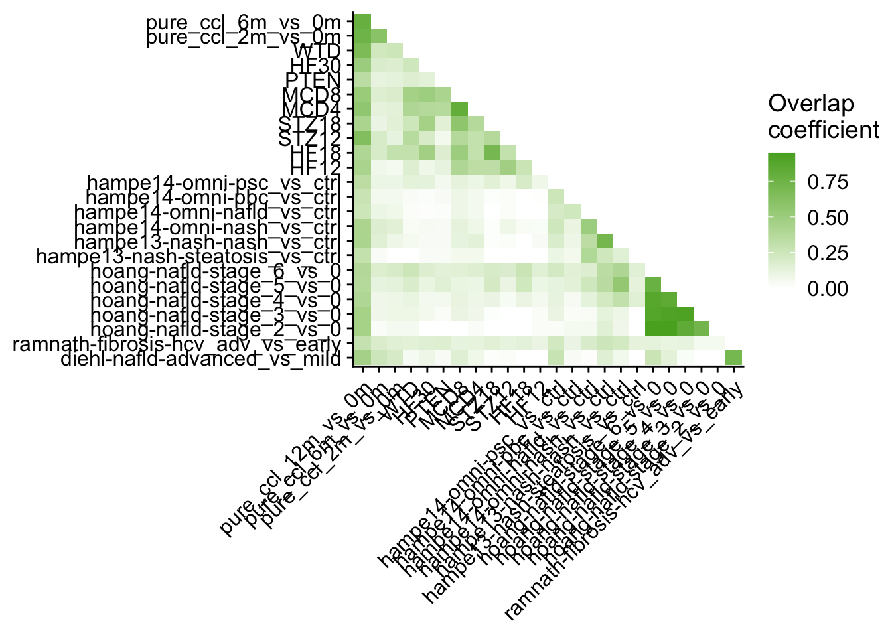
Enrichment of chronic mouse genes in patient cohorts
patient <- readRDS(here(output_path, "limma_result.rds")) %>%
select(gene, contrast, logFC, fdr, regulation, source)
#> select: dropped 3 variables (statistic, pval, phenotype)
teufel <- readRDS(here(output_path, "teufel_genes_hs.rds")) %>%
rename(contrast = study, logFC = logfc)
#> rename: renamed 2 variables (contrast, logFC)
chronic <- readRDS(here("output/mouse-chronic-ccl4/limma_result_hs.rds")) %>%
filter(contrast_reference == "pure_ccl4") %>%
select(-c(statistic, pval, contrast_reference))
#> filter: removed 120,807 rows (75%), 40,269 rows remaining
#> select: dropped 3 variables (statistic, pval, contrast_reference)
# populate gene sets with only significantly expressed genes
genesets_sig <- bind_rows(teufel, chronic) %>%
# adapt cutoff for the definition of significant genes
assign_deg(effect_size_cutoff = log2(1.5)) %>%
filter(regulation != "ns") %>%
add_count(contrast, name = "size") %>%
# exclude gene sets with a size < 10
filter(size >= 10) %>%
unite(geneset, contrast) %>%
unite(geneset, geneset, regulation, sep = "|") %>%
mutate(geneset = as_factor(geneset)) %>%
select(geneset, gene)
#> filter: removed 45,192 rows (86%), 7,653 rows remaining
#> add_count: new variable 'size' (integer) with 12 unique values and 0% NA
#> filter: no rows removed
#> select: dropped 3 variables (logFC, fdr, size)
# construct signature matrix/data frame
signature_df <- patient %>%
unite(signature, source, contrast) %>%
mutate(signature = as_factor(signature)) %>%
untdy("gene", "signature", "logFC")
#> select: dropped 2 variables (fdr, regulation)
#> spread: reorganized (signature, logFC) into (diehl_advanced_vs_mild, ramnath_hcv_adv_vs_early, ramnath_nafld_adv_vs_early, hoang_stage_1_vs_0, hoang_stage_2_vs_0, …) [was 257688x3, now 24107x16]
# run gsea
set.seed(123)
gsea_res_sig <- run_gsea(signature_df, genesets_sig, tidy = T, nperm = 10000) %>%
separate(geneset, into = c("geneset", "direction"), sep = "[|]") %>%
mutate(
signature = as_factor(signature),
geneset = as_factor(geneset)
)
#> summarise: now 24 rows and 2 columns, ungrouped
#> rename: renamed one variable (geneset)
#> select: dropped one variable (gene)
#> distinct: removed 7,629 rows (>99%), 24 rows remaining
#> left_join: added no columns
#> > rows only in x 0
#> > rows only in y ( 0)
#> > matched rows 360
#> > =====
#> > rows total 360
saveRDS(gsea_res_sig, here(output_path, "cross_species_enrichment.rds"))
a <- gsea_res_sig %>%
filter(direction == "up") %>%
mutate(
label = stars.pval(padj),
direction = fct_rev(direction)
) %>%
ggplot(aes(x = signature, y = geneset, fill = ES)) +
geom_tile() +
geom_text(aes(label = label)) +
facet_rep_wrap(~direction, scales = "free", ncol = 1) +
theme(axis.text.x = element_text(angle = 45, hjust = 1)) +
scale_fill_gradient2() +
my_theme(grid = "no", fsize = fz)
#> filter: removed 180 rows (50%), 180 rows remaining
b <- gsea_res_sig %>%
mutate(direction = fct_rev(direction)) %>%
filter(direction == "up") %>%
ggplot(aes(y = geneset, x = ES)) +
geom_boxplot() +
# geom_jitter(aes(color = signature)) +
facet_rep_wrap(~direction, ncol = 1) +
geom_vline(xintercept = 0) +
my_theme(fsize = fz, grid = "x")
#> filter: removed 180 rows (50%), 180 rows remaining
a + theme(legend.position = "none") +
b + theme(
axis.text.y = element_blank(),
axis.title.y = element_blank(),
axis.line.y = element_blank(),
axis.ticks.y = element_blank()
)
| Version | Author | Date |
|---|---|---|
| beaeae0 | christianholland | 2020-12-29 |
Build gene pool for human etiology
For each human etiology (e.g. NAFLD) a union of differentially expressed genes in constructed.
# get etiology for each human contrast
etiologies <- readRDS(here(data_path, "contrast_annotation.rds")) %>%
mutate(etiology = str_remove(disease, pattern = " Stage [0-9]")) %>%
distinct(source, phenotype, contrast, etiology)
#> distinct: no rows removed
contrasts <- readRDS(here(output_path, "limma_result.rds"))
etiology_union <- contrasts %>%
inner_join(etiologies, by = c("source", "phenotype", "contrast")) %>%
assign_deg(effect_size_cutoff = log2(1.5)) %>%
filter(regulation != "ns") %>%
arrange(etiology, gene, regulation) %>%
# how often is a gene-regulation pair reported per etiology
count(gene, regulation, etiology) %>%
group_by(gene, etiology) %>%
# extract this gene-regulation-etiology combination that is reported by more
# contrasts
# in case of ties take the first one (mostly up-regulation, first factor)
slice_max(n, with_ties = FALSE) %>%
ungroup() %>%
select(-n)
#> inner_join: added one column (etiology)
#> > rows only in x ( 0)
#> > rows only in y ( 0)
#> > matched rows 257,688
#> > =========
#> > rows total 257,688
#> filter: removed 251,785 rows (98%), 5,903 rows remaining
#> count: now 4,627 rows and 4 columns, ungrouped
#> slice_max (grouped): removed 4 rows (<1%), 4,623 rows remaining
#> ungroup: no grouping variables
#> select: dropped one variable (n)
saveRDS(etiology_union, here(output_path, "etiology_gene_sets.rds"))Etiology genes in numbers
UpsetR plots showing the number of differential expressed genes per etiology and their overlap.
df <- readRDS(here(output_path, "etiology_gene_sets.rds"))
mat_up <- df %>%
filter(regulation == "up") %>%
select(-regulation) %>%
mutate(val = 1) %>%
spread(etiology, val, fill = 0) %>%
data.frame(row.names = 1)
#> filter: removed 1,411 rows (31%), 3,212 rows remaining
#> select: dropped one variable (regulation)
#> spread: reorganized (etiology, val) into (HCV, NAFLD, NASH, PBC, PSC) [was 3212x3, now 2674x6]
grid.newpage()
upset(mat_up,
nintersects = NA, mainbar.y.label = "Common genes",
sets.x.label = "Total number of genes"
)
grid.text("Up", x = 0.65, y = 0.95, gp = gpar(fontsize = fz))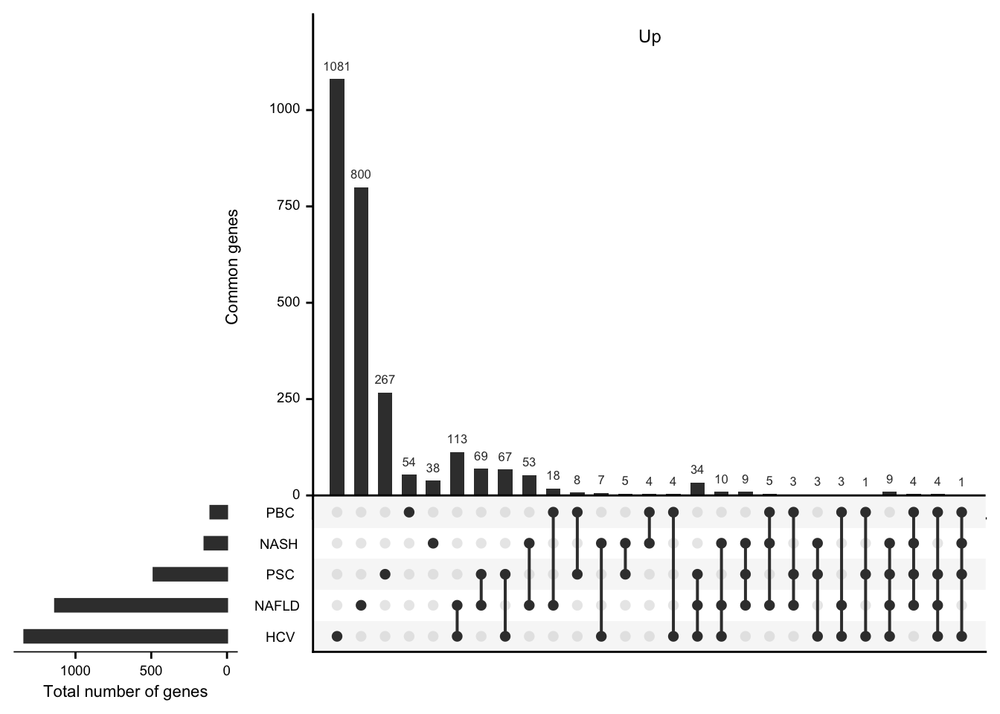
| Version | Author | Date |
|---|---|---|
| f8d8343 | christianholland | 2020-12-21 |
mat_down <- df %>%
filter(regulation == "down") %>%
select(-regulation) %>%
mutate(val = 1) %>%
spread(etiology, val, fill = 0) %>%
data.frame(row.names = 1)
#> filter: removed 3,212 rows (69%), 1,411 rows remaining
#> select: dropped one variable (regulation)
#> spread: reorganized (etiology, val) into (HCV, NAFLD, NASH, PBC, PSC) [was 1411x3, now 1229x6]
grid.newpage()
upset(mat_down,
nintersects = NA, mainbar.y.label = "Common genes",
sets.x.label = "Total number of genes"
)
grid.text("Down", x = 0.65, y = 0.95, gp = gpar(fontsize = fz))
| Version | Author | Date |
|---|---|---|
| f8d8343 | christianholland | 2020-12-21 |
# overlap in percentages
tabyl(c(rowSums(mat_up), rowSums(mat_down)))
#> c(rowSums(mat_up), rowSums(mat_down)) n percent
#> 1 3314 0.849090443
#> 2 476 0.121957469
#> 3 95 0.024340251
#> 4 18 0.004611837Precision and Recall of mouse models
How well mouse models capture the genes that are deregulated in human is computed by precision and recall.
etiology_pool <- readRDS(here(output_path, "etiology_gene_sets.rds")) %>%
filter(regulation != "ns") %>%
mutate(key = "key") %>%
nest(hs_genes = c(gene))
#> filter: no rows removed
teufel_genes <- readRDS(here(output_path, "teufel_genes_hs.rds")) %>%
filter(regulation != "ns") %>%
mutate(class = "teufel") %>%
distinct(gene, study, regulation, class)
#> filter: removed 10,223 rows (81%), 2,353 rows remaining
#> distinct: no rows removed
chronic <- readRDS(here("output/mouse-chronic-ccl4/limma_result_hs.rds")) %>%
filter(contrast_reference == "pure_ccl4") %>%
select(gene, contrast,
logfc = logFC, fdr, regulation,
source = contrast_reference
) %>%
assign_deg(
fdr_cutoff = 0.05, effect_size_cutoff = log2(1.5),
effect_size_id = logfc
) %>%
filter(regulation != "ns") %>%
mutate(class = "chronic") %>%
distinct(gene, study = contrast, regulation, class)
#> filter: removed 120,807 rows (75%), 40,269 rows remaining
#> select: renamed 2 variables (logfc, source) and dropped 2 variables
#> filter: removed 34,969 rows (87%), 5,300 rows remaining
#> distinct: no rows removed
# merge gene pools of all chronic mouse models
mm <- bind_rows(teufel_genes, chronic)
setup <- mm %>%
mutate(key = "key") %>%
# rename(direction = regulation) %>%
nest(mm_genes = c(gene)) %>%
inner_join(etiology_pool, by = c("key", "regulation")) %>%
select(-key)
#> inner_join: added 2 columns (etiology, hs_genes)
#> > rows only in x ( 0)
#> > rows only in y ( 0)
#> > matched rows 120 (includes duplicates)
#> > =====
#> > rows total 120
#> select: dropped one variable (key)
pr <- setup %>%
mutate(metrics = pmap(., .f = function(mm_genes, hs_genes, ...) {
z <- inner_join(mm_genes, hs_genes, by = "gene")
tibble(
recall = nrow(z) / nrow(hs_genes),
recall_ratio = glue("{nrow(z)}/{nrow(hs_genes)}"),
precision = nrow(z) / nrow(mm_genes),
precision_ratio = glue("{nrow(z)}/{nrow(mm_genes)}")
)
})) %>%
unnest(metrics)
#> inner_join: added no columns
#> > rows only in x ( 65)
#> > rows only in y (682)
#> > matched rows 10
#> > =====
#> > rows total 10
#> inner_join: added no columns
#> > rows only in x ( 74)
#> > rows only in y (202)
#> > matched rows 1
#> > =====
#> > rows total 1
#> inner_join: added no columns
#> > rows only in x ( 75)
#> > rows only in y (114)
#> > matched rows 0
#> > =====
#> > rows total 0
#> inner_join: added no columns
#> > rows only in x (73)
#> > rows only in y (49)
#> > matched rows 2
#> > ====
#> > rows total 2
#> inner_join: added no columns
#> > rows only in x ( 67)
#> > rows only in y (343)
#> > matched rows 8
#> > =====
#> > rows total 8
#> inner_join: added no columns
#> > rows only in x ( 64)
#> > rows only in y (1,335)
#> > matched rows 2
#> > =======
#> > rows total 2
#> inner_join: added no columns
#> > rows only in x ( 59)
#> > rows only in y (1,127)
#> > matched rows 7
#> > =======
#> > rows total 7
#> inner_join: added no columns
#> > rows only in x ( 64)
#> > rows only in y (482)
#> > matched rows 2
#> > =====
#> > rows total 2
#> inner_join: added no columns
#> > rows only in x ( 65)
#> > rows only in y (147)
#> > matched rows 1
#> > =====
#> > rows total 1
#> inner_join: added no columns
#> > rows only in x ( 66)
#> > rows only in y (109)
#> > matched rows 0
#> > =====
#> > rows total 0
#> inner_join: added no columns
#> > rows only in x ( 13)
#> > rows only in y (1,336)
#> > matched rows 1
#> > =======
#> > rows total 1
#> inner_join: added no columns
#> > rows only in x ( 10)
#> > rows only in y (1,130)
#> > matched rows 4
#> > =======
#> > rows total 4
#> inner_join: added no columns
#> > rows only in x ( 14)
#> > rows only in y (484)
#> > matched rows 0
#> > =====
#> > rows total 0
#> inner_join: added no columns
#> > rows only in x ( 13)
#> > rows only in y (147)
#> > matched rows 1
#> > =====
#> > rows total 1
#> inner_join: added no columns
#> > rows only in x ( 14)
#> > rows only in y (109)
#> > matched rows 0
#> > =====
#> > rows total 0
#> inner_join: added no columns
#> > rows only in x ( 13)
#> > rows only in y (689)
#> > matched rows 3
#> > =====
#> > rows total 3
#> inner_join: added no columns
#> > rows only in x ( 15)
#> > rows only in y (202)
#> > matched rows 1
#> > =====
#> > rows total 1
#> inner_join: added no columns
#> > rows only in x ( 16)
#> > rows only in y (114)
#> > matched rows 0
#> > =====
#> > rows total 0
#> inner_join: added no columns
#> > rows only in x (16)
#> > rows only in y (51)
#> > matched rows 0
#> > ====
#> > rows total 0
#> inner_join: added no columns
#> > rows only in x ( 14)
#> > rows only in y (349)
#> > matched rows 2
#> > =====
#> > rows total 2
#> inner_join: added no columns
#> > rows only in x ( 12)
#> > rows only in y (686)
#> > matched rows 6
#> > =====
#> > rows total 6
#> inner_join: added no columns
#> > rows only in x ( 17)
#> > rows only in y (202)
#> > matched rows 1
#> > =====
#> > rows total 1
#> inner_join: added no columns
#> > rows only in x ( 18)
#> > rows only in y (114)
#> > matched rows 0
#> > =====
#> > rows total 0
#> inner_join: added no columns
#> > rows only in x (16)
#> > rows only in y (49)
#> > matched rows 2
#> > ====
#> > rows total 2
#> inner_join: added no columns
#> > rows only in x ( 16)
#> > rows only in y (349)
#> > matched rows 2
#> > =====
#> > rows total 2
#> inner_join: added no columns
#> > rows only in x ( 31)
#> > rows only in y (1,336)
#> > matched rows 1
#> > =======
#> > rows total 1
#> inner_join: added no columns
#> > rows only in x ( 30)
#> > rows only in y (1,132)
#> > matched rows 2
#> > =======
#> > rows total 2
#> inner_join: added no columns
#> > rows only in x ( 32)
#> > rows only in y (484)
#> > matched rows 0
#> > =====
#> > rows total 0
#> inner_join: added no columns
#> > rows only in x ( 30)
#> > rows only in y (146)
#> > matched rows 2
#> > =====
#> > rows total 2
#> inner_join: added no columns
#> > rows only in x ( 31)
#> > rows only in y (108)
#> > matched rows 1
#> > =====
#> > rows total 1
#> inner_join: added no columns
#> > rows only in x ( 27)
#> > rows only in y (1,334)
#> > matched rows 3
#> > =======
#> > rows total 3
#> inner_join: added no columns
#> > rows only in x ( 23)
#> > rows only in y (1,127)
#> > matched rows 7
#> > =======
#> > rows total 7
#> inner_join: added no columns
#> > rows only in x ( 29)
#> > rows only in y (483)
#> > matched rows 1
#> > =====
#> > rows total 1
#> inner_join: added no columns
#> > rows only in x ( 29)
#> > rows only in y (147)
#> > matched rows 1
#> > =====
#> > rows total 1
#> inner_join: added no columns
#> > rows only in x ( 29)
#> > rows only in y (108)
#> > matched rows 1
#> > =====
#> > rows total 1
#> inner_join: added no columns
#> > rows only in x ( 24)
#> > rows only in y (685)
#> > matched rows 7
#> > =====
#> > rows total 7
#> inner_join: added no columns
#> > rows only in x ( 30)
#> > rows only in y (202)
#> > matched rows 1
#> > =====
#> > rows total 1
#> inner_join: added no columns
#> > rows only in x ( 31)
#> > rows only in y (114)
#> > matched rows 0
#> > =====
#> > rows total 0
#> inner_join: added no columns
#> > rows only in x (30)
#> > rows only in y (50)
#> > matched rows 1
#> > ====
#> > rows total 1
#> inner_join: added no columns
#> > rows only in x ( 27)
#> > rows only in y (347)
#> > matched rows 4
#> > =====
#> > rows total 4
#> inner_join: added no columns
#> > rows only in x (286)
#> > rows only in y (661)
#> > matched rows 31
#> > =====
#> > rows total 31
#> inner_join: added no columns
#> > rows only in x (307)
#> > rows only in y (193)
#> > matched rows 10
#> > =====
#> > rows total 10
#> inner_join: added no columns
#> > rows only in x (316)
#> > rows only in y (113)
#> > matched rows 1
#> > =====
#> > rows total 1
#> inner_join: added no columns
#> > rows only in x (313)
#> > rows only in y ( 47)
#> > matched rows 4
#> > =====
#> > rows total 4
#> inner_join: added no columns
#> > rows only in x (279)
#> > rows only in y (313)
#> > matched rows 38
#> > =====
#> > rows total 38
#> inner_join: added no columns
#> > rows only in x ( 289)
#> > rows only in y (1,315)
#> > matched rows 22
#> > =======
#> > rows total 22
#> inner_join: added no columns
#> > rows only in x ( 248)
#> > rows only in y (1,071)
#> > matched rows 63
#> > =======
#> > rows total 63
#> inner_join: added no columns
#> > rows only in x (275)
#> > rows only in y (448)
#> > matched rows 36
#> > =====
#> > rows total 36
#> inner_join: added no columns
#> > rows only in x (301)
#> > rows only in y (138)
#> > matched rows 10
#> > =====
#> > rows total 10
#> inner_join: added no columns
#> > rows only in x (305)
#> > rows only in y (103)
#> > matched rows 6
#> > =====
#> > rows total 6
#> inner_join: added no columns
#> > rows only in x (430)
#> > rows only in y (645)
#> > matched rows 47
#> > =====
#> > rows total 47
#> inner_join: added no columns
#> > rows only in x (465)
#> > rows only in y (191)
#> > matched rows 12
#> > =====
#> > rows total 12
#> inner_join: added no columns
#> > rows only in x (476)
#> > rows only in y (113)
#> > matched rows 1
#> > =====
#> > rows total 1
#> inner_join: added no columns
#> > rows only in x (472)
#> > rows only in y ( 46)
#> > matched rows 5
#> > =====
#> > rows total 5
#> inner_join: added no columns
#> > rows only in x (424)
#> > rows only in y (298)
#> > matched rows 53
#> > =====
#> > rows total 53
#> inner_join: added no columns
#> > rows only in x ( 479)
#> > rows only in y (1,286)
#> > matched rows 51
#> > =======
#> > rows total 51
#> inner_join: added no columns
#> > rows only in x ( 425)
#> > rows only in y (1,029)
#> > matched rows 105
#> > =======
#> > rows total 105
#> inner_join: added no columns
#> > rows only in x (482)
#> > rows only in y (436)
#> > matched rows 48
#> > =====
#> > rows total 48
#> inner_join: added no columns
#> > rows only in x (513)
#> > rows only in y (131)
#> > matched rows 17
#> > =====
#> > rows total 17
#> inner_join: added no columns
#> > rows only in x (522)
#> > rows only in y (101)
#> > matched rows 8
#> > =====
#> > rows total 8
#> inner_join: added no columns
#> > rows only in x ( 49)
#> > rows only in y (1,333)
#> > matched rows 4
#> > =======
#> > rows total 4
#> inner_join: added no columns
#> > rows only in x ( 43)
#> > rows only in y (1,124)
#> > matched rows 10
#> > =======
#> > rows total 10
#> inner_join: added no columns
#> > rows only in x ( 50)
#> > rows only in y (481)
#> > matched rows 3
#> > =====
#> > rows total 3
#> inner_join: added no columns
#> > rows only in x ( 51)
#> > rows only in y (146)
#> > matched rows 2
#> > =====
#> > rows total 2
#> inner_join: added no columns
#> > rows only in x ( 52)
#> > rows only in y (108)
#> > matched rows 1
#> > =====
#> > rows total 1
#> inner_join: added no columns
#> > rows only in x ( 30)
#> > rows only in y (688)
#> > matched rows 4
#> > =====
#> > rows total 4
#> inner_join: added no columns
#> > rows only in x ( 34)
#> > rows only in y (203)
#> > matched rows 0
#> > =====
#> > rows total 0
#> inner_join: added no columns
#> > rows only in x ( 32)
#> > rows only in y (112)
#> > matched rows 2
#> > =====
#> > rows total 2
#> inner_join: added no columns
#> > rows only in x (33)
#> > rows only in y (50)
#> > matched rows 1
#> > ====
#> > rows total 1
#> inner_join: added no columns
#> > rows only in x ( 28)
#> > rows only in y (345)
#> > matched rows 6
#> > =====
#> > rows total 6
#> inner_join: added no columns
#> > rows only in x ( 77)
#> > rows only in y (687)
#> > matched rows 5
#> > =====
#> > rows total 5
#> inner_join: added no columns
#> > rows only in x ( 80)
#> > rows only in y (201)
#> > matched rows 2
#> > =====
#> > rows total 2
#> inner_join: added no columns
#> > rows only in x ( 81)
#> > rows only in y (113)
#> > matched rows 1
#> > =====
#> > rows total 1
#> inner_join: added no columns
#> > rows only in x (81)
#> > rows only in y (50)
#> > matched rows 1
#> > ====
#> > rows total 1
#> inner_join: added no columns
#> > rows only in x ( 72)
#> > rows only in y (341)
#> > matched rows 10
#> > =====
#> > rows total 10
#> inner_join: added no columns
#> > rows only in x ( 118)
#> > rows only in y (1,317)
#> > matched rows 20
#> > =======
#> > rows total 20
#> inner_join: added no columns
#> > rows only in x ( 105)
#> > rows only in y (1,101)
#> > matched rows 33
#> > =======
#> > rows total 33
#> inner_join: added no columns
#> > rows only in x (121)
#> > rows only in y (467)
#> > matched rows 17
#> > =====
#> > rows total 17
#> inner_join: added no columns
#> > rows only in x (130)
#> > rows only in y (140)
#> > matched rows 8
#> > =====
#> > rows total 8
#> inner_join: added no columns
#> > rows only in x (135)
#> > rows only in y (106)
#> > matched rows 3
#> > =====
#> > rows total 3
#> inner_join: added no columns
#> > rows only in x ( 73)
#> > rows only in y (1,329)
#> > matched rows 8
#> > =======
#> > rows total 8
#> inner_join: added no columns
#> > rows only in x ( 54)
#> > rows only in y (1,107)
#> > matched rows 27
#> > =======
#> > rows total 27
#> inner_join: added no columns
#> > rows only in x ( 69)
#> > rows only in y (472)
#> > matched rows 12
#> > =====
#> > rows total 12
#> inner_join: added no columns
#> > rows only in x ( 77)
#> > rows only in y (144)
#> > matched rows 4
#> > =====
#> > rows total 4
#> inner_join: added no columns
#> > rows only in x ( 79)
#> > rows only in y (107)
#> > matched rows 2
#> > =====
#> > rows total 2
#> inner_join: added no columns
#> > rows only in x ( 43)
#> > rows only in y (687)
#> > matched rows 5
#> > =====
#> > rows total 5
#> inner_join: added no columns
#> > rows only in x ( 47)
#> > rows only in y (202)
#> > matched rows 1
#> > =====
#> > rows total 1
#> inner_join: added no columns
#> > rows only in x ( 48)
#> > rows only in y (114)
#> > matched rows 0
#> > =====
#> > rows total 0
#> inner_join: added no columns
#> > rows only in x (46)
#> > rows only in y (49)
#> > matched rows 2
#> > ====
#> > rows total 2
#> inner_join: added no columns
#> > rows only in x ( 42)
#> > rows only in y (345)
#> > matched rows 6
#> > =====
#> > rows total 6
#> inner_join: added no columns
#> > rows only in x (132)
#> > rows only in y (681)
#> > matched rows 11
#> > =====
#> > rows total 11
#> inner_join: added no columns
#> > rows only in x (137)
#> > rows only in y (197)
#> > matched rows 6
#> > =====
#> > rows total 6
#> inner_join: added no columns
#> > rows only in x (143)
#> > rows only in y (114)
#> > matched rows 0
#> > =====
#> > rows total 0
#> inner_join: added no columns
#> > rows only in x (143)
#> > rows only in y ( 51)
#> > matched rows 0
#> > =====
#> > rows total 0
#> inner_join: added no columns
#> > rows only in x (134)
#> > rows only in y (342)
#> > matched rows 9
#> > =====
#> > rows total 9
#> inner_join: added no columns
#> > rows only in x ( 611)
#> > rows only in y (1,239)
#> > matched rows 98
#> > =======
#> > rows total 98
#> inner_join: added no columns
#> > rows only in x (539)
#> > rows only in y (964)
#> > matched rows 170
#> > =====
#> > rows total 170
#> inner_join: added no columns
#> > rows only in x (663)
#> > rows only in y (438)
#> > matched rows 46
#> > =====
#> > rows total 46
#> inner_join: added no columns
#> > rows only in x (686)
#> > rows only in y (125)
#> > matched rows 23
#> > =====
#> > rows total 23
#> inner_join: added no columns
#> > rows only in x (700)
#> > rows only in y (100)
#> > matched rows 9
#> > =====
#> > rows total 9
#> inner_join: added no columns
#> > rows only in x ( 525)
#> > rows only in y (1,220)
#> > matched rows 117
#> > =======
#> > rows total 117
#> inner_join: added no columns
#> > rows only in x (506)
#> > rows only in y (998)
#> > matched rows 136
#> > =====
#> > rows total 136
#> inner_join: added no columns
#> > rows only in x (596)
#> > rows only in y (438)
#> > matched rows 46
#> > =====
#> > rows total 46
#> inner_join: added no columns
#> > rows only in x (616)
#> > rows only in y (122)
#> > matched rows 26
#> > =====
#> > rows total 26
#> inner_join: added no columns
#> > rows only in x (633)
#> > rows only in y (100)
#> > matched rows 9
#> > =====
#> > rows total 9
#> inner_join: added no columns
#> > rows only in x (148)
#> > rows only in y (674)
#> > matched rows 18
#> > =====
#> > rows total 18
#> inner_join: added no columns
#> > rows only in x (160)
#> > rows only in y (197)
#> > matched rows 6
#> > =====
#> > rows total 6
#> inner_join: added no columns
#> > rows only in x (166)
#> > rows only in y (114)
#> > matched rows 0
#> > =====
#> > rows total 0
#> inner_join: added no columns
#> > rows only in x (164)
#> > rows only in y ( 49)
#> > matched rows 2
#> > =====
#> > rows total 2
#> inner_join: added no columns
#> > rows only in x (157)
#> > rows only in y (342)
#> > matched rows 9
#> > =====
#> > rows total 9
#> inner_join: added no columns
#> > rows only in x (2,114)
#> > rows only in y ( 998)
#> > matched rows 339
#> > =======
#> > rows total 339
#> inner_join: added no columns
#> > rows only in x (2,026)
#> > rows only in y ( 707)
#> > matched rows 427
#> > =======
#> > rows total 427
#> inner_join: added no columns
#> > rows only in x (2,294)
#> > rows only in y ( 325)
#> > matched rows 159
#> > =======
#> > rows total 159
#> inner_join: added no columns
#> > rows only in x (2,394)
#> > rows only in y ( 89)
#> > matched rows 59
#> > =======
#> > rows total 59
#> inner_join: added no columns
#> > rows only in x (2,416)
#> > rows only in y ( 72)
#> > matched rows 37
#> > =======
#> > rows total 37
#> inner_join: added no columns
#> > rows only in x (1,077)
#> > rows only in y ( 582)
#> > matched rows 110
#> > =======
#> > rows total 110
#> inner_join: added no columns
#> > rows only in x (1,159)
#> > rows only in y ( 175)
#> > matched rows 28
#> > =======
#> > rows total 28
#> inner_join: added no columns
#> > rows only in x (1,181)
#> > rows only in y ( 108)
#> > matched rows 6
#> > =======
#> > rows total 6
#> inner_join: added no columns
#> > rows only in x (1,176)
#> > rows only in y ( 40)
#> > matched rows 11
#> > =======
#> > rows total 11
#> inner_join: added no columns
#> > rows only in x (1,121)
#> > rows only in y ( 285)
#> > matched rows 66
#> > =======
#> > rows total 66
# check how well pr improves when going from 2 to 12 months on average
pr %>%
filter(study %in% c("pure_ccl_12m_vs_0m", "pure_ccl_2m_vs_0m")) %>%
select(study, regulation, recall, etiology) %>%
spread(study, recall) %>%
mutate(diff = pure_ccl_12m_vs_0m - pure_ccl_2m_vs_0m) %>%
pull(diff) %>%
mean()
#> filter: removed 100 rows (83%), 20 rows remaining
#> select: dropped 6 variables (class, mm_genes, hs_genes, recall_ratio, precision, …)
#> spread: reorganized (study, recall) into (pure_ccl_2m_vs_0m, pure_ccl_12m_vs_0m) [was 20x4, now 10x4]
#> [1] 0.182263
saveRDS(pr, here(output_path, "precision_recall.rds"))PR scatter plot
Scatter plot showing precision and recall for each chronic mouse model.
pr <- readRDS(here(output_path, "precision_recall.rds"))
pr %>%
ggplot(aes(x = recall, y = precision, label = study, color = study)) +
geom_point() +
facet_rep_grid(etiology ~ regulation) +
geom_abline(lty = "dashed") +
expand_limits(x = 0, y = 0) +
labs(x = "Recall", y = "Precision", color = "Mouse model") +
my_theme(fsize = fz) +
scale_color_viridis_d()
| Version | Author | Date |
|---|---|---|
| f8d8343 | christianholland | 2020-12-21 |
Time spend to execute this analysis: 04:00 minutes.
sessionInfo()
#> R version 4.0.2 (2020-06-22)
#> Platform: x86_64-apple-darwin17.0 (64-bit)
#> Running under: macOS Mojave 10.14.5
#>
#> Matrix products: default
#> BLAS: /Library/Frameworks/R.framework/Versions/4.0/Resources/lib/libRblas.dylib
#> LAPACK: /Library/Frameworks/R.framework/Versions/4.0/Resources/lib/libRlapack.dylib
#>
#> locale:
#> [1] en_US.UTF-8/en_US.UTF-8/en_US.UTF-8/C/en_US.UTF-8/en_US.UTF-8
#>
#> attached base packages:
#> [1] grid stats graphics grDevices datasets utils methods
#> [8] base
#>
#> other attached packages:
#> [1] gtools_3.8.2 msigdf_7.1 patchwork_1.1.1
#> [4] ggwordcloud_0.5.0 UpSetR_1.4.0 ggpubr_0.4.0
#> [7] cowplot_1.1.0 gridExtra_2.3 ComplexHeatmap_2.4.3
#> [10] VennDiagram_1.6.20 futile.logger_1.4.3 lemon_0.4.5
#> [13] AachenColorPalette_1.1.2 circlize_0.4.11 biobroom_1.20.0
#> [16] broom_0.7.3 progeny_1.10.0 dorothea_1.0.1
#> [19] fgsea_1.14.0 janitor_2.0.1 tidytext_0.2.6
#> [22] glue_1.4.2 readxl_1.3.1 here_1.0.1
#> [25] tidylog_1.0.2 forcats_0.5.0 stringr_1.4.0
#> [28] dplyr_1.0.2 purrr_0.3.4 readr_1.4.0
#> [31] tidyr_1.1.2 tibble_3.0.4 ggplot2_3.3.2
#> [34] tidyverse_1.3.0 workflowr_1.6.2
#>
#> loaded via a namespace (and not attached):
#> [1] colorspace_2.0-0 ggsignif_0.6.0 rjson_0.2.20
#> [4] rio_0.5.16 ellipsis_0.3.1 rprojroot_2.0.2
#> [7] snakecase_0.11.0 GlobalOptions_0.1.2 fs_1.5.0
#> [10] clue_0.3-58 rstudioapi_0.13 farver_2.0.3
#> [13] SnowballC_0.7.0 ggrepel_0.9.0 fansi_0.4.1
#> [16] lubridate_1.7.9.2 xml2_1.3.2 codetools_0.2-16
#> [19] knitr_1.30 jsonlite_1.7.2 bcellViper_1.24.0
#> [22] cluster_2.1.0 dbplyr_2.0.0 png_0.1-7
#> [25] compiler_4.0.2 httr_1.4.2 backports_1.2.1
#> [28] assertthat_0.2.1 Matrix_1.2-18 cli_2.2.0
#> [31] later_1.1.0.1 formatR_1.7 htmltools_0.5.0
#> [34] tools_4.0.2 gtable_0.3.0 fastmatch_1.1-0
#> [37] Rcpp_1.0.5 carData_3.0-4 Biobase_2.48.0
#> [40] cellranger_1.1.0 vctrs_0.3.6 xfun_0.19
#> [43] openxlsx_4.2.3 rvest_0.3.6 lifecycle_0.2.0
#> [46] renv_0.12.3 rstatix_0.6.0 scales_1.1.1
#> [49] clisymbols_1.2.0 hms_0.5.3 promises_1.1.1
#> [52] parallel_4.0.2 lambda.r_1.2.4 RColorBrewer_1.1-2
#> [55] curl_4.3 yaml_2.2.1 stringi_1.5.3
#> [58] tokenizers_0.2.1 BiocGenerics_0.34.0 zip_2.1.1
#> [61] BiocParallel_1.22.0 shape_1.4.5 rlang_0.4.9
#> [64] pkgconfig_2.0.3 evaluate_0.14 lattice_0.20-41
#> [67] labeling_0.4.2 tidyselect_1.1.0 plyr_1.8.6
#> [70] magrittr_2.0.1 R6_2.5.0 generics_0.1.0
#> [73] DBI_1.1.0 foreign_0.8-80 pillar_1.4.7
#> [76] haven_2.3.1 whisker_0.4 withr_2.3.0
#> [79] abind_1.4-5 car_3.0-10 janeaustenr_0.1.5
#> [82] modelr_0.1.8 crayon_1.3.4 futile.options_1.0.1
#> [85] rmarkdown_2.6 GetoptLong_1.0.5 data.table_1.13.4
#> [88] git2r_0.27.1 reprex_0.3.0 digest_0.6.27
#> [91] httpuv_1.5.4 munsell_0.5.0 viridisLite_0.3.0